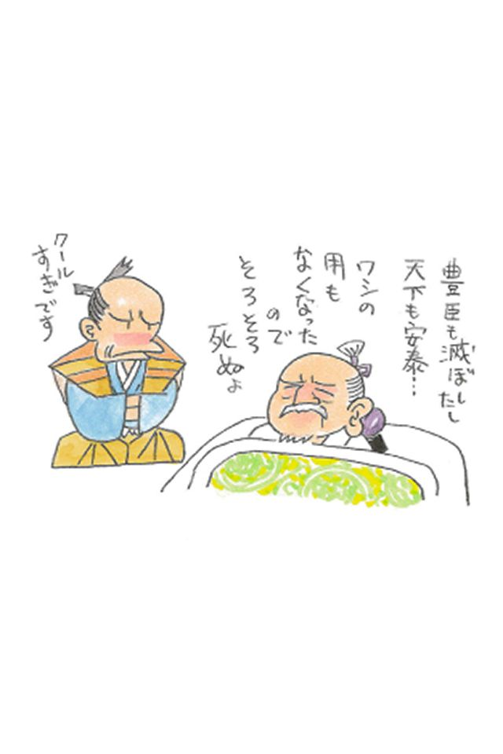

🏠
日
月
縦書き／横書き


| ヤバイ日本史 (アドベンチャーブックス 雑学シリーズ) | |
| 高山宗東 | |
| SOWAPublishing (2013) | |
まえがき
いつものように中野界隈の立ち飲み屋で安酒をかたむけている時のこと、好い加減酔っ払った編集のＳ氏が、「『われても末に会わんとぞ思う』......なんて、生前は割とおとなしい印象の崇徳天皇が、どうして怨霊になるとモノスゴいキャラクターになっちゃうんですかね？」と、切り出してきた。妖怪話が出てきたということは、ご機嫌になってきた証拠。あと十数分でこの人は居眠りをはじめる。
「五月五日に蛇とか蟇蛙とか蜈蚣とか......百匹の毒虫をひとつの壺に封じ込めて食い合いをさせ、最後に生き残った虫を呪具として用いる『蠱毒』ってあるでしょ？」
「残酷ですねえ。」
「あれはデスマッチをさせて、毒虫の王を選んでいるわけね。百花の王が牡丹で、百獣の王が獅子。衆に優れたモノならば、執念や怨念も強い......というわけ。してみるとね、日本人の中でイチバン強い怨念を持ち得るのは、畏きあたりの御方というわけですよ」――と、調子づいていい加減な話をしたら、
「そういう『ヤバい話』ばかり集めた、歴史の本を作りましょう！」と、呟いてＳ氏はカクンと眠りに落ちた。
「それは、ちょっとヤバいでしょう......」
日本語誌の研究者にとって「ヤバい」という言葉は、厄介な日本語の代表のような存在である。まず、語源が解らない。一般に、「危険な状況」を指す言葉ではあるが、「危ぶい」が変化したものとも、「やばな」という形容動詞が形容詞化したものともいい、中には「表向きは遊技場だが内実は売春窟を営む『矢場』みたいにいかがわしいこと」――なんていい加減な説まである。
個人的には、胡乱な者がひそみ得る「藪」や、インチキな民間霊能者をさす「野巫」などと関連がある語かな？ などと思うけれど、いずれにしても、よく解らない。
そのうえこの言葉は、変化の過程において、まったく異なる意味を包括するようになった。特にここ最近「ヤバい」といえば、危険な状態どころか、「ヤバいくらいカッコいい」「ヤバいくらい美味しい」などと、好ましさを表現する意で使われることが矢鱈と多い。
そんな変幻自在の雲霧みたいな言葉に挑んで、巧く収拾がつけられるはずがない――とかなんとか言いながら、結局焚きつけられて、無い知恵を絞って書いたのが本書である。願わくば読者にとって、「ヤバいくらい面白い」方のヤバさに仕上がっておりますように......。
【目次】
先史・飛鳥・奈良・平安時代
鎌倉・室町、戦国・安土桃山
江戸・幕末
「国号」にまつわるヤバイ話 「日本」という国号は、そもそも蝦夷のものだった
「日本」という国号にパクリ疑惑
日本人の日本人たるアイデンティティーは、当り前のようだが「日本」という国を意識するところからはじまる――とすれば、「日本」というカントリーネームは、すべての日本人にとって、「アイデンティティーの根幹」といえるのではないだろうか。
ところがその大切な「日本」という国号には、重大な「パクり疑惑」がある。
古代における日本の中央政権は、中国から「倭」と呼ばれていた。一説には、古代日本人は自分たちを「わ」と称していたが、当時の日本には文字が無かったため、中国人が「倭」の字をあてた、ともいう。
「倭」の差別的意味
いずれにしても、当時の先進国である中国から、ありがたくもいただいた「倭」という国号を、はじめは何の疑念を抱くこともなく使っていた倭人たちであったが、やがて、この呼称および文字に差別的意味合いが含まれていることに気づくのである。
「倭」という文字の象形は、身体の曲がった人間を意味している。これは、偉いエライ中国の皇帝陛下の前で、卑屈に腰をかがめ、恐縮しながら臣下の礼をとる後進国人の姿を暗に示したもの。つまり「倭」とは、壮麗な中華の宮廷に参内してまごつく田舎者を嘲笑した、侮蔑的呼称であった。
「倭国」と「日之本」
11世紀に成立した中国の歴史書『新唐書』には、「日本列島には倭国の他に『日之本』という別の国があり、倭国が『日之本』を征服して、国号を『日之本』もしくは『日本』に替えた」とある。
普通に考えれば、中国と国交を持っていた「倭」は畿内の中央政権、東をあらわす「日之本」は一名「日高見」ともいった関東～東北にかけての蝦夷）の国、ということになるだろう。（10世紀に成立した中国の歴史書『旧唐書』の記述は『新唐書』とは逆で、「日之本が倭国を征服した」となっているが、これは国号の推移だけを鑑みれば、そのように見えたのだろう。）
「日本」は蝦夷の部族名だった
どうやら「日本」という国号は、本来は中央政権と対立していた蝦夷の部族名であったらしい。中央政権は、それまで使っていた「倭」という名が差別語であると気づき、「太陽の本」すなわち「太陽の直系」というなかなか素敵なカントリーネームを名乗る蝦夷を制圧したのを幸い、臆面もなくその国号をイタダイてしまった......ようなのだ。つまり、日本人のアイデンティティーのよりどころである「日本」という国号はそもそも、古代の中央政権がパクった、「他人のフンドシ」だった――というわけである。
「和風」「和食」の「わ」でいいの？
ところで、日本人は、自分たちの文化を「和風」と呼び、この国独特の様式を「和式」といい、日本料理を「和食」と称しているが、この「和」の語源も「倭」である。「和やか」という良い意味の字をあてているとはいえ、音のうえでは「倭」と同じ「わ」に他ならないわけで、日本人自ら「和」などと称するのはいかがなものか？ と思わないでもない。
かえって現在では、かつて「倭」という侮蔑的呼称を用いた中国人の方が、日本的様式を「日式」などと言い換えてくれているありさまなのだから......。
ヤバイ霊峰、富士山は「不死山」だった！ 決して死火山にならない呪いを受けた山
富士さんはどんどん変わっている
「富士は日本一の山」と歌にも謳われるように、日本人はまるで自分たちの象徴であるかのように、富士山が大好き。
長く裾野を引く美しい円錐形で、春夏秋冬朝昼晩それぞれに表情を変えながら、雄々しく屹立する白頭の山――しかし、この光景は、決して永久不変のものではない。
そう、富士山は活火山なのである。
そもそも富士山は、ここ10万年ほどの間に急速に成長し、私たちが目にしているかたちに近づいてきたのは、１万年ほど前のこと。この程度のタイムスパンでは、山としてはごく新しいものといわなくてはならない。
さらに富士山は、その後も何度も噴火を続け、そのたびにかたちを変化させている。最近で活発だった時期はおよそ２５００年前で、その頃は現在のような美的な形状をしていなかった、と考えられている。
つまり、現在の優美なかたちは、噴火を繰り返しながら、ここ２０００年ほどで徐々に形成されていったもの。そして富士山は、まだその活動をやめたわけではないから、今後もどんどん変化してゆくはず......なのである。
オソロシイ山
たまたまここ１０００年くらいの間、活動が激烈でない時期が続き、そしてその１０００年がたまたま日本文化の形成期と重なっていたために、詩歌、文学、絵画等でさかんにとりあげられた。かくして富士山は、日本の象徴的風景にように見做され、あたかも永久不変のモニュメントのように認識されるようになったのだ。考えてみれば、北斎や広重が浮世絵版画の題材としたために、「フジヤマ」が海外にまでも知られるようになったのも、わずか百数十年のことにすぎない。
したがって、日本文化の勃興期である平安時代頃までは、富士山は美しいのみならず、「畏ろしい」ものでもあった。実際、奈良平安期には大きめの噴火が、何度も繰り返されている。当時書かれた、日本最古の物語『竹取物語』からは、平安びとが富士に対して持っていた憧れと畏敬の念を嗅ぐことができる。
かぐや姫と「不死」の薬
かぐや姫は月の都へ帰る際、心ならずもフッてしまった帝へのつぐないに、不死の秘薬を遺していった。しかし恋しいかぐや姫がいなくては、この世になんの未練があろう。帝は、天に最も近い高山の上で、姫の形見を焼くことを思いつき、勅使を使わす。せめて煙なりとも、天上のかぐや姫に近づけようという算段である。かくして、不死の薬を焼いたので、この山を「ふじ」というようになり、またその時に多くの兵士を率いて行ったので「富士」（士に富む）の文字をあてるようになった......と、『竹取物語』は説明している。
むろんこれは、語源説としてはかなり出鱈目な、ダジャレに近いオチである。しかし、「その煙、いまだ雲の中へたち昇るとぞいひ伝えたる」という締め括りの一文からは、当時の人びとのリアルな富士山観がうかがえる。
つまり富士山のイメージは、「いつも噴煙をあげている山」。通常のその煙は、優美な姿に相応しく、雲をのぼる仙人のようにゆるやかなのだろう。ところが一見優雅なその煙は、この火山が死んでいないことの証でもあって、何時なんどき再び凄まじい爆発を起こすかもしれない「警告」でもあるわけで、煙が立ちのぼっている限り、人びとは噴火や火砕流の驚異から免れることができないのである。
つまり『竹取物語』は、「なぜ、富士は煙をあげ続けているのか？」という問いに対して、「それは、不死の薬を焼いた呪いである。ゆえに、富士山は死ぬことができずに噴煙をあげ続けるのだ」と回答した物語......という側面をもっているのである。
平安と変わらないメディア
現代においても、富士山は優美な風貌をたたえながら、しかし一方では、大噴火だ、山崩れだ、溶岩流だ、大地震だと、山への畏れを払拭できずにいる。その不安に対して、硬軟含めた予言、予兆、流言飛語やデマの類が、絶え間なく週刊誌や情報番組などを賑わせ続けているのは、平安の『竹取物語』と変わらない、メディアのあり方なのである。
ヤバイ「花」！ 桜の下に屍あり 「死」の象徴であるからこそ美しい桜花
桜が大好きな民族
日本人ほど桜が好きな民族は、世界を見回してもちょっといないだろう。
日本人は、「桃色の提灯が下品だ」、「酔客に絡まれる」、「花冷えで寒い」、「トイレが遠い」などと文句を言いながらも、しかし桜の季節になれば、誰しも、どこかしらから誘いがかかり、いそいそとお花見に出かけてゆく。翻って外国人には、まだ寒さの残るなか、わざわざ木の下で飲食をする「花見」という風習が、まったく理解できないという。
また、「花は桜木、人は武士」などともいう。花のうち最も美しく潔いものが桜であり、人の中で心ばえの清く優れたものは武士である――というほどの意味で、とんち小坊主として知られる一休禅師の言葉といわれている。
梅の方が人気あった時代も
古来桜は、花の咲きようでその年の米の出来具合を占う風習もあったほど我が国では好まれた花であったが、しかし太古の昔から、今日のように諸花のうち人気のトップに君臨していたかといえば、そうでもない。
たとえば『万葉集』に所収された桜の歌は44首にすぎないが、これに対して梅の歌は１００首以上おさめられている。古代における詩歌の題材としては、どうやら梅の方が人気があったらしい。こうした認識が逆転して、桜の花の方がもてはやされるようになるのが平安時代中後期で、これはちょうど末法思想による仏教的無常観の普及と重なる。やがて、武士の時代となるにつれ、散り際の潔さが愛でられるようになり、「美しさ」「儚さ」「潔さ」が相俟って、桜は不動のトップとして日本人に好まれるようになった、というわけである。
なぜ桜は儚いのか
しかし、無常観や武士気質の影響を受けるまでもなく、桜は日本においては「死」......それも、美しさの代償としての「潔い死」の象徴に他ならなかった。
『古事記』には、皇室の先祖である邇邇芸命が高天原から日本にやってきた際のエピソードとして、次のような逸話が記されている。
邇邇芸命の降臨の際、もともと日本の地に住んでいた大山津見神は、石長と木花佐久夜のふたりの娘を献上した。木花佐久夜姫はその名の通り、爛漫と咲く桜のような美女であったが、石長姫は醜かったので、邇邇芸命は親元へ返してしまった。これが邇邇芸命の大失敗だった。大山津見神は、美しい木花佐久夜姫に「邇邇芸命よ花咲くように繁栄あれ」と、石のごとく壮健な石長姫に「邇邇芸命の寿命長かれ」と、それぞれの祝詞を託していた。しかし、石長姫を手放してしまったことで、祝詞が呪いに転換し、邇邇芸命は石のごとき長命を保てなくなってしまったのだ。そんなわけで、邇邇芸命の子孫、すなわち天皇の命も、現人神でありながら、花のように儚く短いものになってしまった――という。『古事記』には、この「木の花」が、特に何であったかは言及されていないが、桜であろうことは、日本人には自明であろう。
死者の妄念を吸う
また、延慶本『平家物語』にも、深く桜を愛したために桜町中納言と呼ばれた藤原成範が、儚い花の延命を、死と甦りを司る陰陽道の主神泰山府君に祈念するくだりがある。
つまり桜は、死の象徴であると同時に、その美しさによって死せる魂を慰める「鎮魂」の象徴でもあったわけで、そんなところから、やがて桜の木そのものに、死者の妄念を晒す効果が求められていった。
『源氏物語』の「御法」では、死にゆく紫の上が自らを六条院の梅と桜になぞらえ、匂宮に後を託す。また、南北朝の争乱の渦中で恨みを呑んで死んでいった後醍醐天皇の塔尾の陵には、その魂を鎮めるために千本の桜を植えることが計画された。
まるで、死者の妄念を吸って美しく咲くがごとき桜の花――これは、「桜の樹の下には屍体が埋まっている」（『桜の樹の下には』昭和３年）と書いた近代作家梶井基次郎にも繋がる幻想の水脈である。
やっぱり怖い桜
桜は美しい、しかしそれは、死と隣合わせの儚さゆえの美しさである。だから、怖い。
単純に花をめでて飲食をする「花見」という風習が根付いたのは江戸中期以降のこと。それ以前のお花見には、「美しさ」と「怖さ」が混在していたのである。
美しい桜の花、しかしその根元に、怨念を抱いて死んでいった屍があるとすれば、群生する夜桜の美しい光景も、なにやらそら恐ろしいものに見えてくる。
女の浮気が当たりまえのヤバイ「習慣」 「鈴木」さんや「佐藤」さんが、たくさんいる理由
浮気は女の使命？
その昔、「浮気は男の甲斐性」などと、男性の女遍歴はむしろ称賛されるむきさえあった。しかし、同じ浮気性でも女性のばあい、「尻軽女」などと散々にこきおろされたものである。
いや、現代でも、男性が「浮気は文化」などと言えばお笑い草で済むけれど、次々と相手を替える女性を「魔性の女」などと呼び、冷やかしながら侮蔑するのが世の常だから、そのふうは今もって続いているといえようか。
しかし歴史的に見れば、「浮気」や「多情」は女性にこそ許された特権、むしろ女性の使命とさえいうべきものだったのである。
一妻多夫制だった古代社会
娰、姜、姞などという具合に、中国の古い姓の多くには「女」という文字が入っている。これは、古代社会が本来母系制であったことを示す証拠、と考えられている。
母系制とは、家督や血筋が母から娘へと、女性の系統で受けつがれてゆく社会の仕組みで、その際、母は多くの夫をもつか、あるいは特定の夫をもたない「一妻多夫制」が特徴である。
その結婚のかたちは、男性が女性のもとに通ってよしみを通じる「通い婚」で、基本的に夫や父親は不在。したがって、「片親は可哀想」などという発想は中世以後のもので、母系制下では父親などいなくて当然だった。
母は、複数の男性の子を宿し、娘のうちもっとも優れた者を後継者とする。男子が生まれると、労働力あるいは防衛力として使役された。この当時の男性なぞ、そんな儚い存在にすぎなかったのである。
男の逆襲
しかし、コミュニティーが大きくなるにつれ、権威を維持するためには軍事力が必要になり、やがて実際的な力の行使に重きがおかれ、社会は次第に男性の系統で血筋が受けつがれる「父系制」へと移行していった。
そうなったとき、問題が起こった。母の産んだ子は必ず母の血を引いているけれど、ＤＮＡ鑑定など存在しなかった当時、それが父の子であるという保障はまったく無かった。そこで父系社会は、ことさらに女性の浮気を「悪」と見なして束縛し、性の自由を奪ったのである。
思えばそれは、長きにわたって男の上に君臨しつづけた母系制への報復であったのかもしれない。
今も残る母系制のなごり
日本も、文明の草創期には母系制であり、平安～鎌倉の頃まで、部分的に母系制的慣習が残っていた、と考えられている。
たとえば地方の有力な家には、何らかの事情でその地へとやってきた公家、武家、神官などのいわゆる「貴種」の男性に宿を提供し、娘と一夜を共にさせて次代の種を受ける習俗があった。ヤマタノオロチを退治して姫を得るスサノオの物語も、母系的習俗を窺わせるに充分である。
そうした母系制の足跡は、私たちの身近にも残っている。たとえば、日本で多い苗字の２トップ「佐藤さん」「鈴木さん」である。
時代によって価値観はま逆
「左衛門尉という官職に就いていた藤原氏」をルーツとする佐藤氏は有力な武家で、治安維持のためたびたび全国に出張させられた。
鈴木氏は紀州熊野権現を神官の家柄で、暦の頒布や布教活動のため、こちらも全国を回遊した。おそらく、行く先々で種の提供を求められたに違いない。
やがて母系制から父系制へと移行してゆく過程で、父の苗字を名のる必要がおこり、全国に「佐藤さん」「鈴木さん」が乱立した......というわけ。
父系制下ではタブーとされた女性の浮気、しかし、母系制下においては、たくさんの男性と関係をもち、性質の異なる多くの子供を産むことが「良い女」の条件だったのである。
ヤバイ「性」の話 「女好き」より「ホモセクシュアル」の方が社会的に認められた前近代
ホモセクシャルな武士の時代
明治維新から太平洋戦争までの近代日本国家は、総力をあげて「強兵」政策を押しすすめた。男の子は、いざという時に立派な兵隊として闘えるように、「男らしく」育てられなければならなかった。
「ホモセクシュアルなんて、とんでもない！」――そうした風潮は、戦後にも多分に残っていた。今でこそ、ニューハーフや女装家のオジサンたちがテレビ画面をにぎわせているけれど、１９８０年代頃までは差別や偏見が激しく、彼らの嗜好が市民権を得ることは、なかなか難しかったのである。
明治よりまえの封建時代は、さらに厳しかっただろうナ......などと、合点するのはいささか早計である。むしろ、戦国時代から江戸中期頃にかけての「武士の時代」の方が、男性同士の恋愛は大っぴらに行われ、社会的にも「良きもの」として認知されていた。
信玄、謙信、信長、政宗も
武田信玄、上杉謙信、織田信長、伊達政宗などなど、名だたる戦国武将はみなみな男性同士の肉体関係を楽しんでいた。ホモセクシュアルな関係は「男色」とか「衆道」と呼ばれ、現在のように「そのケがある」特別な人のみならず、一般男性にとって、女性と関係を持つのと同じく、ごく当たり前の嗜好であった。ほとんどの人間が、バイセクシュアルだった――と言い換えてもよいだろう。
むしろこの趣味がない人の方が少数派で、当時書かれた『老人雑話』という本の中には、「豊臣秀吉はめずらしく男色好まない」という意味のことが、特筆的に記述されている。
男色の背景
武士の時代に男色が盛んにおこなわれた背景には、しきたりや主従関係、戦場における連帯感の想起など、武家の習俗が深くかかわっている。
例外を除いて、ふつう戦場には女性は連れて行かない。武士たちは、明日の命もわからない極限状態の緊張感を慰めるため、また共に闘う連帯感を深めるため、あるいは主君に命を捧げる証として、戦陣において男同士の契りを交わしたのであった。
また武家は、嫡子相続制が基本であった。バカであっても、身体が弱くても、先に生まれた長男が家を継ぎ、次男以下はそのサポートにまわる仕組みである。
そうしたしきたりのなか、結婚前の家長が正妻でない女性に子供を産ませてしまうと、正妻の子が次男以下になる可能性がおこり、御家騒動のもとになる。
だから「結婚するまえは、女の尻を追いかけるより、男と関係していた方が良い」と、男色が大っぴらに公認されたのである。
ゆえにこそ、男の友情を深め、「あはれ」の心を育む男色は、高尚な趣味とされた。男色家はまた、風雅な人という意味で「数寄者」などとも呼ばれ、尊敬すらされたのである。
文学にも描かれたゲイたち
文学作品にもホモセクシュアルは数多く登場する。『好色一代男』の主人公世之介は、３７４２人という途轍もない数の女性遍歴を重ねたが、さらに７２５人の少年とも情を交わしたという。
『東海道中膝栗毛』の弥次さんと喜多さんも、もともとは男色の関係であったことが本文に明記されている。これらの記述に、恥じたり、憚ったりする気配は微塵もない。ゲイの関係はそのくらいごく当たり前のこと......いや、むしろカッコいいことだったのである。
女房にむかしの若衆引あわせ
『誹諧武玉川』
これは、「結婚した女房に、昔のゲイ友を紹介する」場面を詠んだ古川柳である。
「リベラルで、進んでいる」と自惚れる現代人でも、ちょっと引くほどのリベラルさではあるまいか。
ヤバイ「性」の話その２ 子供が当たり前に「性欲の餌食」にされていた件・内緒で始末された子供の記憶が「妖怪」を生んだ
「小児性愛が当たり前」でもあった時代
大人が子供を性欲の対象とする「小児性愛」は、現在では最も反社会的な犯罪のひとつとして嫌悪されているけれど、そうした「罪」の概念が人びとの心に浸透したのは、つい最近のことである。
江戸時代どころかつい戦前まで、貧しい農村には頻繁に「人買い」や「女衒」がやってきて、めぼしい子供を買ってゆくのは当たり前のことだった。
ちょっと可愛らしい子供は、「人攫い」にさらわれた。だからつい先ごろまで、暗くなるまで遊んでいると、「人攫いにさらわれるよ！」という言いまわしが残っていたものである。
あの「人攫い」は、身代金を要求する近代的な誘拐犯ではない。子供を攫って悪所に売る、所謂「人買い」のことなのだ。
性愛の餌食にされた少年
しかし、あるいは貧しい地域に生まれた子供にとっては、栄養失調で死ぬよりは、口減らしで売られる方がマシだったか......そんな陰惨な物語は、往々にして遊郭に売られた女性の悲話に結びつきがちである。
まだ幼い４、５歳のうちに売られた少女たちは、下働きや見習いを経て、概ね11～14歳くらいで客を取らされるようになる。まだ幼い......とはいえ、「人生50年」といわれ、成人しても30～40代で死んでゆく人が多かった時代のことだから、当時の11歳は、現在の小学生とは、子供としての感覚はやや異なるのだろう。
ふつうに暮らしていても、15歳くらいで嫁にゆく女の子は少なくなかったのだから。
むしろ、「性欲の餌食」の感が強いのは、少年の方であった。貧しい家に、目鼻立ちの整った男の子が生まれると、その多くは７～８歳くらいで「稚児」として、名目上、寺に「修行」に出された。
「修行」の実態
仏教では女性と性交することを「女犯」といい、僧に対しては、戒律によって厳しくこれを禁じていた。しかし、僧とはいえ男である。身体から湧き起る性欲のはけ口はどうしても必要になる。
そこで彼らは、厳しく禁じられた女性との性交を避け、対象を男性へと転換した。「男性との性交は禁じていない」という戒律の目をくぐり、また、「女性に手を出さないために、これをおこなう」という大義名分をつくりだして、美しい少年を漁るのだから始末が悪い。
その一方で、貧しい家に生まれた男の子にとって稚児になることは、ほとんど唯一といって過言ではない「出世の糸口」であったことも否めない。
稚児たちは、枕を共にする高僧と寝物語ができるほどに高い教養をほどこされ、やがて年齢を重ねると、希望する者は得度して僧となり、あるいは「寺小姓」として寺院運営に携わる者も少なくなかった。
有力寺院のエライ坊様に気に入られた小姓の中には、御家人株を買ってもらってホンモノの侍になった者さえいる。
貧家の親たちは、近い将来に我子の身にふりかかるおぞましい運命と、遠い未来の栄達を願って、泣く泣く寺へ「修行」に出したのだろう。
少年愛の傷
しかし、むろん巧い話ばかりではなかった。子供の頃に植え付けられた心身の傷によるものか、狂った人生をおくった稚児も少なくない。たとえば、江戸前期の文筆家沢田源内は、稚児時代に寺で得た知識を元にして、偽系図を作って世渡りをし、しまいには詐欺師のように世間から疎まれて世を去った。これは芝居だが『白波五人男』に出てくる美人局の弁天小僧菊之助（『菊』は肛門の洒落でもある）も、「岩本院の稚児あがり」という設定である。
そうそう、これは近代に入ってからのことだが、太宰治は『人間失格』などの著書の中でたびたび、「少年時代に、女中や下男から性的虐待を受けた」ことを示唆している。
それが、彼の大きすぎるコンプレックスの因のひとつであるなら、やはり、小児への性的虐待は罪深い行為といえよう。
ヤバイ「輸出品」 「ことり」の恐怖――人攫いにさらわれた子供は、どこへ行ったのだろう？
江戸時代の仰天輸出品
現代日本の主要輸出品目といえば、自動車、半導体、鉄鋼などなど。では江戸時代は？ といえば、一応鎖国体制下ではあったものの、つきあいのあった中国やオランダに、金銀、漆器、陶磁器や俵物と呼ばれる高級干海産物などがさかんに輸出されていた。
そうした輸出品のなかに、隠れた人気アイテムがあった。海産物や金銀を表とすれば、こちらは裏。それも、裏道中のウラミチといって過言ではない、なにしろ「妖怪のミイラ」なのだから......。
今でも、地方の神社や旧家の屋根裏などから、世にも奇怪なモノの入った木箱が発見されることがある。中身はナント、河童や天狗や人魚など、「妖怪」のミイラである。
妖怪ミイラを作る職人
正体を明かせばこれは、精巧なツクリモノ。猿の上半身に鮭の尻尾を繋げた「人魚」や、タヌキの身体にフクロウの嘴を縫いつけた「烏天狗」、スッポンと猿を合成した「河童」......といった手合いの細工物である。
現在でも、部品加工など細かな作業の精巧さは、我国の町工場のオジサンの右にでる者がいないように、江戸の無名細工師たちの腕前も、当時世界に並ぶ者がなかった。まるでホンモノのような妖怪のミイラは、ちょっと悪趣味な海外土産として人気が高かったのである。江戸後期に来日したシーボルトも、「人魚」などを買い求めていて、そのコレクションは今もオランダの博物館に収蔵されている。
これらのミイラには、国内需要もあった。見世物や縁日の呼び物に使われ、その用がなくなると、好事家が「珍しい物」として秘蔵した。中には神社や寺に、神様のように祀られるものもあった。
正体不明の怖いミイラ
ところで、妖怪ミイラのなかには、じつはその素材が、よく解らない物もある。いや、解らないのではなく、「解りたくない」のだ。
実はこれらのミイラ、概して小さい。天狗といえば大入道というのが相場だし、小柄だという河童にしても、それは成人男性と比較してのこと。ところが妖怪ミイラの多くは、人間でいうと赤ん坊か２、３歳くらいの幼児の大きさなのだ。
作り物、と解って見ていても、ふと、その素材となったモトのものが何かと考えると、背筋がうそ寒くなる。あるいはこれは、奇形に生まれついた胎児か、攫われた赤ん坊を「素材」としているのではないか？――かねがねそのような妄想を抱いていたところ、怪奇漫画家の水木しげる氏も、「妖怪のミイラ」というエッセイの中でまったく同様の指摘をされて、我が意を強うしたという次第である。
「コトリ」の恐怖
ふつうの状態では、人間はミイラにはならない。水分や脂分が腐敗して、綺麗に乾燥しないのである。即身仏、すなわちミイラをなることを目指す高僧は、生前から飲食を調整し、生きながら枯れてゆくよう、おもむろな死へと自らをいざなうのである。
その漫然たる空腹や枯渇、倦怠感は、到底常人に耐えられるものではあるまい。即身仏となることが、仏道修行のなかでも最も過酷なもののひとつと位置づけられるゆえんである。
日本全国に「コトリ」の民話が残されている。可愛らしい「小鳥」ではない。大きな袋や籠を背負い、子供を攫ってゆく恐ろしい大男の伝説である。攫われた子供のうち、目鼻立ちの良い子供は遊郭や悪所に売られたのだろうが、ちょっと不細工な顔立ちの赤ん坊や子供には......果たしてどのような運命が待ち受けていたのだろうか？
ヤバイ「間引き」の現場 内緒で始末された子供の記憶が「妖怪」を生んだ
人間は飢餓よりも飽食に弱い
人類は、その文明をもつ以前から、長く飢餓と戦い続けてきた。
そもそも身体からして、飢餓対応にできているらしい。人類という種が誕生して以降、その大半の年月をずっと飢餓に悩まされてきただけあって、私たちの身体は驚くほど飢えに強い。健康な成人であれば、少しの水分と塩分さえあれば、半月やひと月は持つという。
しかし反対に、飽食にはオソロシく弱い。少し食べ過ぎたり飲み過ぎたり、ちょっとメタボになったりするだけで、すぐに生活習慣病になる。痛風になる。血圧があがり、血糖値があがり、尿酸値があがる――そんな、飽食があたりまえとなった現代人には、前近代の人びとが飢餓に対して抱いた「本当の恐怖」は、解らない。
なぜ間引きが行われたのか
１００年ほど前までは、たかが食べ物、それも粥とか芋とか雑穀とか、そんな日常のツマラナイものために、可愛い我が子を手にかけさえ、したのである。それがコミュニティーを守るためとあれば、致し方なかったのだ。
前近代のコミュニティーにおいては、町なら町、村なら村で、その地域で暮らせる人間のキャパシティーが決まっていた。余程流通のよい大都会は別にして、ほとんど他所から食料が運ばれない場所にあっては、その地域で生産できるだけの食糧で、人口をまかなうしかすべがなかったのである。
そもそも、各家庭の生産力が明確に定まっていた。武士なら殿様からいただく扶持米の高、農民であればその家の田畑の広さが決まっていて、まず増える見込みはなかった。したがって、養える家族の人数も、ある程度「決まって」いるのである。
長男が生まれ、次男が生まれたら、三男はもう養えない......そういう家では、三男以下は闇に葬られた。有効な避妊具など無い時代、また安全な堕胎術も発達していなかった時代、要らない子供たちは生まれるとすぐに、「生まれてこなかったこと」にされた。これを「間引き」という。
鬼となる母
民俗学者の柳田國男は、子供の頃にこの「間引き」を描いた絵馬を見て、「深いショックを受けた」と、たびたび語り、また記している。
母親が、生まれたばかりの嬰児を絞め殺すその図の、障子に映った母親の影には鬼のような角が生えているという。可哀想だけれどこうしなければ、今生きている家族全員が共倒れになるのだ。その家族は、明日から何事もなかったかのように生活するのだろう。近所のひとも、そんな話題はおくびにも出さない。それが、前近代のひとつの側面であった。
処分された後に――
こうした間引きの風習は、日本だけのものではない。ヨーロッパにもアジアにも、オセアニアなどでも散見される、人類共通の習慣である。つまり人類は、そのようにして文明を育み続けてきた生き物なのだ。
ヨーロッパでは、そうして処分した嬰児を、敷居の下に埋めたという。敷居は、内と外の結界として重要な場所。家族を守るために闇に葬られた嬰児は、一種の魔除け、家の守り神としてそこに祀られたのである。
してみると、夜中にトタトタ走り回っていたずらをする東北地方の座敷童子や、赤ら顔の子供の姿をしていて樹の上に住むという沖縄のキジムナーなどの「子供の姿をした妖怪」も、その一類なのではないだろうか。奥座敷や樹という、その家の重要な場所に宿る彼らは、忘れたフリをしているけれど、決して忘れることができずに家族の記憶に残る「間引かれ子」の後身にほかならないのだから。
ヤバイ「滅亡への序曲」 童謡に隠された、コワイ構造
権力者たちも恐れた童謡
「童謡」というと、現代人には「子供がうたう歌」ほどの認識しかないかもしれないが、いにしえの人びとはそこに、ある種の「神秘」を見いだしていた。
そもそも、東洋には、「天」からのお告げは、さまざまなかたちで下る......という信仰があった。そのお告げは、決して解りやすいかたちではやってこない。誰が書いたともしれない奇妙な落書きや、彼岸と此岸をつなぐ「橋」の上で交わされるバラバラの会話――そうした雑多な流言を繋ぎあわせ、解釈し、天からのメッセージを読み解くのが、我が国では陰陽師に代表される、「方術師」の仕事であった。
子供たちや民間の人びとが口ずさむ「童謡」や「流行歌」も、そうした天からの通信のひとつであると考えられた。童謡には、意味のよく解らないものが少なくない。いや、歌詞内容が意味不明であればあるほど、そこには天からのメッセージが込められている......と、とくに政幣をとる権力者たちは畏れ、またその情報を欲しがったのである。
歌が鎌倉幕府を滅ぼした？
これは、歴史というより伝説の分野に属する話だが、古代中国の周王朝のころには、「採詩官」という役人がいたという。国中をめぐって流行歌を採集し、天からのお告げを読み解く専門の役人。流行歌は、統治への不平不満や、権力者が気づかない不穏の大穴を暗に示す、リアルな民の声でもあったのだろう。
日本の歴史上にも、意味不明の歌が流行した後、大きな事件が起き、「さてはあの歌は、この事件を予言したものだったのか」と気づいた、というエピソードがたくさんある。
たとえば、鎌倉幕府の執権家として権力をほしいままにしていた北条一族の長、高時入道が、ある夜、酔いつぶれて寝ていると、どこからともなくやってきた田楽法師たちが「てんのうじのやようれいほしをみばや」と囃し、踊りだした。その舞いのあまりの面白さにつられて、高時も踊った。騒ぎを聞き駆けつけたひとが見たところ、なんと高時は無数のバケモノと共に踊り興じているのだった（『太平記』）。
ほどなく各地で反幕勢力が蜂起、さしもの鎌倉幕府も倒され、高時をはじめ北条一族数百名は、集団自決という末路をたどる......この事件の後、人びとは「てんのうじ」は天王寺、「ようれいほし」は天下が乱れる予兆を示す妖霊星であり、「あの歌」が、河内から倒幕勢力として楠正成が出現してくることをさした「予言」であったことに気づいたのである。
利用される童謡
さて、「天から予言がくだる」というベクトルを逆に解釈すると、「権力に対して直接いうことができない不満を、韜晦しながらぶつける」ことであり、あるいは「これから起きるであろう（多くの場合不穏な）ことを予告すること」となる。つまり、「童謡」の態を装った不穏な歌を流行らせて世間を煽動した、確信的政治犯もいたのではあるまいか。
たとえば坂本龍馬など、運営する亀山社中が紀州藩ともめごとを起こしたさい、「船を沈めたその償いに、金をとらずに国を取る」という不穏なざれ歌を巷に流行らせて世論を味方につけ、自らを有利に導いている。
童謡がコワイ本当の理由
もちろん、「何時何日、ドコソコで、カクカクの事件を起こす」と公開しては逆効果だが、詳細をはぐらかせた犯罪予告には、相手の不安をむくむくと増幅させる効果がある。
たとえば、「カゴメカゴメ、籠の中の鳥はいついつ出やる、夜明けの晩に鶴と亀がすべった、後ろの正面、誰あれ」という『カゴメ歌』である。カゴメは「囲め」、または「（犯罪者を入れる）籠目」。囲んで追い詰めた獲物（鳥）を捕獲、あるいは処刑しようとしたら、天地がひっくりかえるようなこと（夜明けの晩）が起こって、縁起の悪い結果（鶴亀がすべる）になった。今度は私たちが、後ろも、正面も囲まれ、追い詰められている――とも読めるし、また違う解釈がいくらでも成り立つ。
この、解釈によってさまざまに読めるということが、不穏な空気を煽り立てるには大切なのだ。結果、解釈する人間が勝手に、自分の怯えに即して、自分が一番コワイと思う内容に読み解いて、さらに一層強く怯えてくれるのだから......。
ヤバイ「食事」 「それが当たり前」ということもあり得る、カニバリズムのヴァリアント
食べられた人たち
貝塚などの遺跡から時折、人骨が出てくることがある。調べてみると、その骨には煮たり、焼いたりした痕跡があり、中には骨髄を取り出すためか細かく打ち砕かれたものさえ、ある。
骨の切断面に煮炊きの痕跡があるということは、素直に考えれば「調理した証拠」ということになるのだが、考古学者の多くはもっぱら「断定は難しい」とか「火葬の跡かもしれない」などという判断をくだしがちである。
人間が人間を食べる「食人」......いわゆるカニバリズムは、人類の最も厳しい禁忌のひとつである。私たちの先祖が、そんな人類のタブーを犯す野蛮な食人種であることを認めたくない心情も解らないではないけれど、文化誌的に考察するなら、ひと口に「食人」といっても、さまざまなケースがあることを考慮しなくてはなるまい。
美食としての食人
古代中国には、奴隷や征服した異民族の肉を塩漬にして食べる習慣があったという。
江戸中期に書かれた『新著聞集』には、あやまって人肉を口にしたところ、あまりの旨さに病みつきになり、やがて墓を掘り返しては死肉を喰らうようになった僧の話が記されている。
また、これはフィクションであるが、江戸時代の怪奇小説家上田秋成の『雨月物語』には、死んだ愛童に執着するあまり、その死体を食べて鬼と化した僧を描いた「青頭巾」という話が所収されている。
たしかにこれらの例のように、美食の一類型として、あるいは変態的な欲望の餌食となって食われるのはご免蒙りたい。
薬としての食人
その一方で、飢饉や兵糧攻めのような極限的飢餓状態における食人は、ある程度致し方ない要素も含んでいる。たとえば、豊臣秀吉が鳥取城を兵糧攻めにした際は、飢えた城兵が死者の肉を喰らったと『信長公記』にあるし、江戸時代にたびたび東北地方を襲った飢饉の際には、「死者を食べることがあったが、さすがに家族を食べるのは忍びないので、死人が出ると隣近所で交換しあって食べた」（『北行日記』）などという記述がみられる。
あるいは、人体は「薬」でもあった。
江戸時代、首斬り御用をつとめた山田浅右衛門は、その役得として死骸から生肝を取り出すことを許されたそうで、その干したものは高貴薬として金と同様の価値で取引された。「いずれ捕まれば打ち首になり、あっしの肝はあなた様の役得になるのだから、逃亡中の今、貸すと思っていくらかめぐんでおくんなさい」と、夜更けにこっそり山田家の戸を叩く犯罪者もあったというから、少々オカしい。
薩摩藩では、処刑された遺体によってたかってとりつき、生肝を取り、ゼラチンを啜る「ひえもんとり」という行事（？）が、家族みんなで楽しめる健全娯楽として人気があった――と、これは藩士の子孫である作家の里見惇が記している（『ひえもん取り』）。
また、古代エジプトでつくられたミイラは、その後、アラビア世界やヨーロッパ、果ては日本にまで運ばれて、その多くが薬として飲まれてしまった。もちろん、古代のミイラがそんなにたくさんあるわけがないから、身元不明遺体や浮浪者が「新しいミイラ」にされてしまったこともあるのだろう。
敬愛を示す食人
しかし、古代におけるカニバリズムの動機として考えられる最大の理由は、実は「死者への尊敬」なのである。
鹿や熊の仮装をしたシャーマンらしき人物を描いた土器がいくつも見つかっている。これは、自然の力の象徴である強靭な獣と一体化するために革をかぶり、おそらくその肉も食べた姿と想像されている。「旨いから食べる」のではなく、「一体化するための儀式として、身体に取り入れる」のだ。
それと同じく、賢い者、勇敢な者、美しい者が死ぬと、その力をこの世にとどめておくために、家族や仲間たちが我が身に取り込んだ――それが、古代における食人のメンタリティーであった。
長唄三味線方の杵屋勝東治氏の納骨の際、息子の俳優勝新太郎氏がいきなり、父の遺骨をポリポリかじり出すというハプニングがあった。そのショッキングな映像はワイドショーなどで報道されたので、ご存知の方も多いだろう。しかしあの行為は、古代人の情動としてはごく自然なもの。勝新は、お父さんのことが大好きで、とても尊敬していたという。
ヤバイ日本最高の「予言者」 聖徳太子はノストラダムス？ 乱世に浮かび上がるアブナイ予言書『未来記』
「予言書」とは何か
いわゆる「予言書」といった手合いの眉唾モノは、本当に「よくできている」。人はみな、不安を抱えながら生きているもの。いつの世でも一寸先は闇。程度の差こそあれ、それは戦国時代でも、現代でも同じである。
社会はどう変わってゆくのか？
財産は、動産、不動産、どちらが有利か？
自分や子供や孫の将来は？――などなど、心配でシンパイで、たまらないのが人間のサガ。そんな不安に、「未来のことが解る」とつけ込んで幻惑し、するすると利益を引き出す手法は、あざといけれど、シンプルで、普遍的で、効果的だ。
１９９９年の７の月にとうとう「恐怖の大王」が降ってこなかったものだから、世間からすっかり相手にされなくなってしまったけれど、まだ世紀末には少々間のあった80年代頃、ノストラダムスは、書籍に、雑誌に、テレビにと、大いにもて囃されたものである。
町を追われた巨大な番犬は
奇妙な同盟に腹を立てん
野原で鹿を狩りし後
狼と熊とは互いに疑心暗鬼を生ぜん
『百詩篇』第五巻第四番（「ノストラダムスの予言」澁澤龍彦）
なんとなく意味ありげで、思わせぶり。その一方で、文意はどうとでもとれるから、さまざまな「解釈」が成立する。したがって、予言になんらかの現実を当て嵌めようとすれば、実はいくらでも「こじつけ可能」なのだ。
こじつけにコジツケを重ねて、「読み解いた！」と一人合点した解読者は、すでに予言者の信者になっている――という巧い仕組み。むしろ真面目な人ほど引っかかる。ノストラダムスはこの心理を応用して、「危険な陰謀や、異端迫害の時代を巧みに生き抜いた」（「ノストラダムスの予言」）といわれている。
日本の「ノストラダムス」
実は日本にも、ノストラダムスばりの予言で、超時代的人気を博したキャラクターがいる。少々意外かもしれないが、かつては長らく一万円札のカオとして親しまれた聖徳太子である。
「馬小屋で生まれ、良い匂いがした」とか「空飛ぶ馬に乗って飛鳥の宮廷と斑鳩を往復した」などという伝説をもつ聖徳太子は、さまざまな不思議話に彩られた異能の政治家であるが、なかでもとりわけ奇妙なのが、日本の将来におこるさまざまな事柄を記した予言書『未来記』を遺した......という話である。
むろん『未来記』の正本は伝わっていない。聖徳太子が『未来記』を書いたというのは、あくまでも噂話にすぎないのだ。おそらく、『日本書紀』に記された太子の人となり「兼知未然（兼ねて未然のことを知る）」、すなわち「この後どうなるかということを、あらかじめ知っているかのように賢い」という記述あたりを膨らませた、誰かの妄想であろう。
『未来記』はあるのか？
ところがこの無いはずの『未来記』が、時折フッと歴史に登場する。それも大抵は「乱世」、たまたま発見された「断片」として......。
たとえば『太平記』によれば、楠正成は後醍醐天皇に加勢することを決める際に大坂の四天王寺で、秘蔵の『未来記』を特別に見せてもらったという。そこには、「今、隠岐に流されている後醍醐天皇がやがて復権する」と解釈できる記述があったため、正成は自分の行動が正しいことに自信を深めたというのだ。
しかし、「太平記の正成」はどういうわけか、せっかく特別に閲覧させてもらった『未来記』を、「今の時代のところだけでいい」と、その部分しか見ないのだ。本当に予言が当たるのか過去と比較したり、何百年も先の世を見てみたいと思うのが、人情ではないのか？
他にも「聖徳太子の『未来記』にこういうことが書かれているが......」とか、「この事件は『未来記』のこの文言のことでは......」などという記述をもつ文献がたくさんあるが、どれもその該当部の出典について、ほとんど説明しようとしない。つまり、無いのだろう。
昔から信頼度抜群の聖徳太子
聖徳太子は権威ある人物である。ゆえに、「『未来記』にも書かれている！」と大上段に構えることで、行動や文章にある種の正統性が与えられる――おそらくソコが狙いである。
その時々の状況が都合よく解釈できる「未来記の断片」はつまり、すでに起こった事件を正当化したり、揶揄したりするために、即席で作られたものなのだろう。ならば、その事件を、秘密めかした隠喩や寓意で綴り換えるだけでいい。後は、お寺の縁の下や神社の裏山にでも埋めて、「発見」するだけ......。
ところで、『未来記』を書いたとされているのは、実は聖徳太子だけではない。聖武天皇や空海、最澄、はては源義家のような武将さえも、「予言の書を遺した」といわれている。しかし、知名度において、聖徳太子の右に出るものはない。太子の信頼度は抜群なのだ。
紙幣に価値があるのは、それを発行した国家が信頼されているからに他ならない。逆にいえば、紙幣に掲載される肖像は、信頼を具象化したものでなければならない。
聖徳太子が長く最高額紙幣の顔であったゆえんも、案外そんな「信頼感」にあるのか......だとすれば、日本国政府も、歴史上の偽書作家と同じスタンスで、長いこと太子の信頼感を利用していた、ということになる。
ヤバイ「フィギュア愛好」 大仏造営は、仏教破壊？！
世界に比類ない日本の仏像
聖武天皇は、仏教の教えによって国をおだやかに治める「鎮護国家」を目指し、その象徴として各国に国分寺と国分尼寺、そして都には東大寺を創建した。それら全体のシンボルとも言うべき存在が、巨大な廬舎那仏像、いわゆる「奈良の大仏」である。
スカイツリーとか、ランドマークタワーとか、巨大建造物を見慣れた現代人でも、奈良の大仏には、ちょっと圧倒される。素直に「すごいなあ」と思う。こういう経験を、大抵修学旅行などで、若い頃にしているため、日本人は、少し歳をとってくると寺めぐりなどが好きになってきて、「やっぱり、興福寺の阿修羅像には色気があるねェ」などと、解ったようなことをいうようになるのである。
とはいえ、古代から中世にかけて造られた日本の仏像の美しさは、世界的にも比類ない。
仏像は邪道だった
多湿な気候だったのがかえってよかったのだろう。はじめは、仏教的荘厳世界観を表現するために原色に近い色合いでけばけばしく塗られていた仏像だが、年月を経るうちに色が剥げ、木肌が露出し、枯れた風合いになった。むしろその味わいが、日本人のメンタリティーにはピタリと合った。だから、塗りなおさずにそのまま有難く拝み、今日にそのすがたを伝えている。「ああ、お釈迦さまの心を感じるようだ」――と有難がるのは、実は大間違いである。
本来の仏教に、「仏像」を崇拝する習慣などなかった。古代インド人たちは、ホトケという偉大な存在を安易に偶像化することを、むしろ不遜で失礼なことと考えたのである。
古代インドでは、釈迦への尊崇をあらわす際には、お釈迦さまの骨である「仏舎利」を入れる塔状の厨子「ストゥーパ」や、仏教の教えの象徴である「法輪」を、その対象として礼拝した。
仏像はフィギュア
「仏像」という異質なモノが出現したのは、釈迦の死後５００年ほどを経った紀元１００年頃、それもインドの西北ガンダーラにおいて、であった。当時、この地は、アジアにおけるローマ世界との交流拠点で、ヘレニズム文化の影響を最も受けやすい場所であった。
したがってガンダーラには、神々の姿を優美勇壮にかたちづくったギリシャ・ローマの彫刻が、ゴロゴロ入ってきていた。
それを目にした仏教徒たちは、やがて自分たちの尊者も優美にかたちづくりたいという欲望に駆られ、禁じ手であった仏像をつくり出した――それが、仏像の起源である。
つまり仏像は、敬虔な信仰の姿勢とは対極に位置する、ミーハーな興味から生まれてきた、いわばフィギュアなのだ。
キリスト教徒にもいたフィギュア愛好家
しかし、ガンダーラの仏教徒のみを軽薄なフィギュア愛好家とそしるわけにはいかない。これは、キリスト教においても同断であった。
『旧約聖書』の十戒に、「いかなる像も作ってはならない」とあるように、元来、キリスト教やユダヤ教では、偶像崇拝は厳しいタブーであった。中東地域においても同様に、人間が「唯一の神」をかたちづくるなど「とんでもなく不遜な行為」と、されていたのだ。
しかし、キリスト教が世界に広まってゆくにつれシンボルが必要になってきた。はじめは「救い主にして神の子イエス・キリスト」（ΙΗΣΟΥΣ ΧΡΙΣΤΟΣ ΘΕΟΥ ΥΙΟΣ ΣΩΤΗΡ＝Iesous Khristos Theuo Hyios Soter）という言葉の頭文字のモノグラムが、ギリシャ語で魚を表す「イクトゥス（Ｉｃｈｔｕｓ）」に通じるため、魚のかたちをキリストに見立てて崇拝し、お茶を濁していたのだが、やがてガマンしきれずに７８７年、ニケーア公会議において「聖像をつくっていいことにしよう」と決めてしまったのである。
つまり、十字架にはり付けられたキリストさんも、巨大にして荘厳な毘盧遮那仏も、本来の宗教的教義とは無関係、敬虔な信仰とは対極なところから発展してきた、フィギュア愛好に過ぎない――ということになる。
まあ、日本の仏像に関していえば、教義よりもフィギュアを偏愛する嗜好は、「まことに日本人らしい好み」ではあるけれど......。
ヤバイ「人間関係」 金持ちの箱入り娘や嫌味な上司が「鬼に食われちゃった」話のウラ
食われた女の話
聖武天皇の時代（在位７２４～７４９年）、大和国十市郡菴知村（現在の奈良県天理市）に鏡作造という大変裕福なひとが住んでおり、彼には万の子という、とても美しい娘がいた。
家柄の良い男たちがたびたび彼女に結婚を申し込んだが承諾せず、何年かが過ぎていった。そんな時、貴重な品々を何度も、それも大量に贈ってくれる男があらわれた。父娘はその贈り物に心を奪われ、とうとう閨を許すことにした。
初夜の晩のこと、娘の寝室から「痛い」という声が三度聞こえてきた。両親は「はじめてのことだから、きっと痛いのだろう」と気にもせず寝てしまった。
翌朝、母親が娘の寝所を覗くと、なんと娘は頭と指１本を残して、食い尽くされていた。高価な贈り物はすっかり、獣の骨などの汚らわしいものに変わっていた――（『日本霊異記』「女人の悪鬼に点されて食瞰はれし縁第三十三」）
嫌味な上司も食われた
清和天皇（在位８５８～８７６年）の時代のこと。その頃、朝廷では早朝から業務がおこなわれたので、役人たちは火を灯し、まだ暗いうちから役所に出なければならなかった。
ある下役の者が遅刻してゆくと、上司の車がもう着いている。「こりゃあまたお小言だ」と恐れながら仕事部屋に入ったが、灯もなく、人の気配もない。明かりをつけると、血のついた笏や沓が散乱しており、上司の姿は、髪のついた血みどろの頭の肉を残して、忽然と消えていた。
扇に上司の筆跡でことの顛末が記してあったので、「鬼に食われた」ことが解った――（『今昔物語』第二十七巻第九話「官の朝庁に参りたる弁、鬼の為にくはるるものがたり」）
鬼とは何か
これらふたつとも、鬼の仕業とされた殺人事件である。では、「鬼」とはいったい何なのだろうか？ 絵本やアニメで育った現代人は、角を生やし、虎の皮のパンツをはいた赤や青や黄色のバケモノ......と答えるかもしれない。
しかしそれは、絵巻などに描くさい、姿がなくては不便であるからと、便宜上与えられたかたちであって、鬼とは本来、そうした明確な姿かたちを持たないモノなのである。
「鬼」という字は中国で生まれたもので、厳密にいうと中国の「鬼（キ）」は、日本の「おに」とは別物である。漢字は音で通じるため、「キ」はまた「帰（キ）」という意味をもつ。すなわち中国の「鬼」とは、帰ってきた死人＝「幽霊」のこと。これに対し、日本語の「おに」は、「居ない」という意味の「おぬ」を名詞化したもので、「見えないけれど気配を感じる」という状態をさした言葉である。
つまり、日本語の「おに」とはそもそも、「存在しないもの」という意味なのだ。
「鬼」の正体
もういちど、先にあげたふたつの物語を反芻していただきたい。
近隣でも評判の美しい娘......それも、近在随一の金持ちが、手塩にかけた箱入り娘である。父娘ともに、少々強欲なようだ。結婚を申し込んで断られた「家柄の良いひと」たちは、必ずしも金持ちというわけではない。羽振りはよくないが、プライドの高い名門が申し込んだ縁談を、格下の家が無碍に断ったら......恨まれる要素は充分にある。
ちょっと遅刻しただけで、ネチネチと一日中嫌味をいう上司。今朝もまた、重箱の隅を突くようなツマラナイことで絡まれた部下が、ついカッとなり――。扇にことの顛末が記されていた、というのもなんだか怪しい話である。ちなみに登場人物の役職は「弁」と「史」で、ともに文書の作成を専門とする仕事である。下役が、上司の筆跡を真似ることなど、それこそ朝飯前だったに違いない......
どちらも、奈良・平安という時代設定を取り去れば、現代でも起こりそうな殺人事件である。それが、いるはずのない「鬼」の仕業として片づけられている。このようなことは、実際にはもっとあったに違いない。
「鬼」とはいったい、何なのだろうか？
ヤバイ「死」にまつわる話 「祟り」が怖くて死刑が執行できなかった平安時代
平安時代に死刑は執行されなかった？
大同４（８０９）年に起きた「薬子の乱」に深く関与した参議藤原仲成には、その翌年、律令に基づいて死刑の処断が下された。これは、平安時代に執行された数少ない死刑の事例――といわれているが、研究者の間では、その執行方法が正規の処方ではない「射殺」であったため、果たしてそれが公のものであったか疑問視する向きもある。
ともあれ、ここで重要なのは、ことほど左様に平安時代の宮廷においては、「死刑」が忌み嫌われた......ということである。
さらにこの後、弘仁９（８１８）年に嵯峨天皇が、盗賊の死刑を停止する宣旨を発するなどした結果、保元の乱（１１５６年）の後始末で敗者の源為義らが死罪に処されるまでのおよそ３５０年間、死刑は一件も執行されなかった。
世界史でも稀
もちろん例外もある。たとえば地方で反逆した者などは、鎮圧の名の下に軍勢が送られ殺害されているし、都近くでもそれなりの大罪を犯して捕えられれば、名目上は律令に則って「死刑」の処断はなされた。しかしその際も、執行権をもつ天皇の慈悲によって罪一等が減じられ、実刑としては流罪にされた。
したがって、「死刑が一件もなかった」というよりは、やや複雑な言いまわしになるが、「宮廷の積極的指示による、実刑としての死刑は、一度も執行されなかった」とした方が正しいだろうか。ともあれ、このような統治事例が、世界の王権史上類例がないことには変わりない。
とはいえこれは、何もヒューマニズムや人権主義などの近代的な高い理想に基づいた施策では、まったくない。
「祟り」が怖い
ひとつには、「祟り」が怖かったのである。
そもそも平安京に遷都された理由のひとつが、桓武天皇と皇位を争って敗れた早良親王の祟りを怖れてのことであった。長岡京造営中に起こった藤原種継暗殺事件に関与した疑いで淡路に流罪と決まった早良親王は、一切の食を絶って憤死した。
その後、不思議なことに桓武天皇の近親者が次々と死んだ。さらに都には恐ろしい疫病が流行し、自然災害も頻発した。これらはみな、無念の死を遂げた早良親王の祟りと見做され、その結果都は、因縁の長岡京から平安京へと移されたのである。
藤原氏との政争に敗れ、九州の大宰府に左遷された後に亡くなった菅原道真も、無念のあまり怨霊となったと考えられた。道真の没後、何故かまだ死亡年齢に達しない政敵たちがバタバタと死に、極め付けには内裏に雷が落ち、貴族や女官が打たれ死ぬという前代未聞の怪事が起こったものだから、道真を天神として祀り、その霊を慰めたのである。
「流罪」でこのありさまなのだ、「死刑」になどしたら、どのような祟りがあるか解ったものではない――それが、平安時代に死刑が執行されなかった大きな理由のひとつである。
日本人が嫌う「ケガレ」
もうひとつの理由として、この時代の人びとがひどく「死穢」を嫌った、ということがあげられる。これは、とても日本的な概念である「ケガレ」と深くかかわるメンタリティーで、早い話が「最大のケガレである死とは、一切関わり合いたくない」ということである。
子供の遊びで「エンガチョ」というものがある。大した理由もなく誰かひとりを「穢れた者」とし、その者に触られたら穢れが移るという、残酷な鬼ごっこ。穢れからまぬがれるためには、人差し指と中指を絡めあって一種の「印」を結ばねばならない。たかが子供の遊びと思いきや、13世紀には成立したとされる『平治物語絵詞』にはすでに、殺された信西の首を見た都人が、指を交差させてエンガチョをしている様子が描かれている。
法がある以上、それを施行させる立場にある者は責任を果たさねばならない。それが社会のルールである。しかし、平安時代の権力者たちは「エンガチョな死に関わるのはイヤ」とばかりに逃げだした。どこかの国の法務省でも、そんな話を聞いたことがある。
ヤバイ「情報戦」の話 陰陽師が駆使した「式神」の正体
陰陽道とは何か
陰陽師というと、神とも妖怪ともつかない、いわゆる「使い魔」のような式神を駆使し、不思議な術をもって占いや調伏をするイメージが強いかもしれないが、それは安倍晴明が活躍したとされる平安時代中期以降のもの。
そもそも陰陽道とは、「陰陽説」と「五行説」を主な論拠として日本で成立した、「この世の仕組み」を掌握するための哲学で、陰陽師の役割も本来は、星を観察して暦をつくったり、治水土木のために地の利を計ったりする、きわめて科学的なものであった。
したがって、陰陽寮という役所が成立した奈良時代、陰陽師の多くは、当時の先進国であった中国や朝鮮にルーツをもつ、帰化系豪族の出身者や、その関係者が多かった。
やがて、平安時代になり、藤原氏が摂関家として力を持つようになると、権力は次第に皇室や朝廷から藤原氏へと移行していった。こうした時代の趨勢にあわせて、陰陽師たちの役割も少しづつ変化していった。
新しいタイプの陰陽師・晴明
権力が皇室や朝廷の手中にあった時代には、陰陽師は、暦をつくり、国の安泰を計り、墳墓の場を定めるなど、もっぱら国家のためにはたらいていればよかった。
しかし、藤原氏の時代になると、藤原氏のために有益なはたらきをする陰陽師が「優れた陰陽師」になった。いや、陰陽師のみならず、すべてのテクノクラートがそのような傾向に流れていった。
『古今著聞集』に、こんな逸話がある。
ある時、藤原道長に瓜が献上された。陰陽師安倍晴明が占い、瓜のひとつに毒気があることが解った。観修僧正が加持を行うと、瓜はぶるぶると震えだした。そこで、名医として知られた丹波忠明が鍼を立て、名将の誉れ高い源義家が腰刀で瓜を割ると、おそろしや瓜の中からは蛇が出てきたではないか。驚いたことに忠明の鍼は蛇の両眼を貫き、義家の刀は綺麗に蛇の首を落としていた――
この物語はフィクションであろうが、権力とテクノクラートとの繋がりを端的に表わしている。すなわち、事件に際し、陰陽道が良し悪しを判断し、仏法が裁断し、医術が処方をほどこし、武力で排除する......。
晴明は、政治の実権が皇室や朝廷から藤原摂関家へと移行する過渡期にその生涯を送り、藤原氏のプライベートな問題の処理に長けた、新しいタイプの陰陽師だったのである。彼が後世「大陰陽師」として名を成したゆえんは、そうした「新しいスタイルの陰陽道」の確立者と見做されたゆえではないだろうか。
安倍という氏族
では、「藤原氏のプライベートな問題」とは何だろう？
それはおそらく、数多の貴族のうちから一歩抜きん出るための、さらには一族の中で勝ち残ってゆくための「情報戦」である。
安倍晴明の陰陽道の師は、賀茂忠行である。カモという氏は系統上いくつか確認できるが、総じて祭祀や川の利権などとかかわりをもつことの多い氏族で、古くからの陰陽道の家柄ではなかった。平安京も、もともとは賀茂氏の領地で、その中心を流れる鴨川は、賀茂氏のテリトリーだったのである。そして河原にいるのは、異類異形と呼ばれた 裏社会の民や、芸能をもって各地を渡り歩く放浪者。闇あるところに溶け込み、しょろっと入り込んでしまう怪しい者ばかりである。つまり賀茂氏は、それら異形の者どもの元締め的存在でもあるのだ。ここで私たちは、晴明の時代をさかのぼること数百年、前鬼後鬼と呼ばれる鬼神を駆使して山野をほしいままに跳梁した行者、役小角の本姓が賀茂氏で、本名を賀茂役公といったことを思い起こすべきであろう。
晴明が属す安倍氏もまた、多様な広がりをもつ氏族ではあるが、元来陰陽道を継承してきた帰化系氏族ではない。その語源は、食料をあらわす「あえ（＝餐）」であるとも、またアイヌ語で火をあらわす「アビ」から来ているともいわれる、食と深く関わる一族であった。
「式神」の正体
そんな背景をもつ安倍氏もまた、賀茂氏と同様に、下情に通じていたものと思われる。飯炊きや下ばたらきとして息のかかった者を主要な貴族の邸宅にもぐり込ませ、必要な情報を引き出すなどなど......後に伊賀や甲賀の忍者たちが、忍術の体系的ルーツとして何故か「陰陽道」をあげていることを、ここに付記しておこうか。
平安当時、身分によって使う言葉も異なり、同じ日本語を話していても、貴族と庶民では話も通じなかった、といわれている。
そのような時代に、しれしれと下々の者と会話を交わし、必要な情報を引き出し、自在に命令をくだす陰陽師は、あたかも鬼神を使役する超能力者のように見えたことだろう。
安倍晴明が使役した式神は、ふだんは一条戻り橋の下にいたという。普通に考えれば、橋の下に住んでいるのは鬼神や妖怪ではなく、「放浪の民」である。
ヤバイ「皇室」の話 実際には誰が誰の子か解らない皇室の系図
出生に悩まされた天皇
「自分がナニモノで、ナンのために生き、そしてナンのために死ぬのか？」――誰しも、若い頃に悩んだであろう青臭い悩みは、人類に共通する思念なのかもしれない。
たとえその国の最も高い身分にのぼり詰めようとも、そうした煩悶からは逃れられないらしい。
平安時代、自らの出生に悩まされ続けながら、生涯を終えた天皇がいる。「崇徳院」の呼称で知られる、崇徳天皇である。
崇徳の生涯を語るには、まずは系図上その曽祖父にあたる白河院にさかのぼらなくてはならない。
白河上皇の「院政」
白河は、はじめて上皇として政幣をとった、いわゆる「院政」の創始者であった。今でこそ「院政」という言葉は、歴史用語として小学生でも知っているが、それまでは、天皇を退位した者が政治をとるなど、考えられないことであった。
この時代、政治の実権は代々天皇の外戚として力を振るった藤原摂関家に奪われていたが、白河の父である後三条は、藤原氏を外戚に持たずに帝位についた珍しい経歴の持ち主であった。後三条天皇は、これを契機に天皇親政の復権をはかるが、あえなく失敗する。
結局、天皇である限りは、煩雑な宮廷儀式をこなさなくてはならず、そのためには摂関家の力を借りざるをえなかったのである。
白河は、そんな父の思いを受けて、誰も考えなかった「院政」という破天荒な政治スタイルを創造し、上皇という自由な立場で政治改革を試みることに成功したのである。しかし今度は、「院」そのものが、天皇親政をはばむ巨魁となってしまう。
祖父に寝とられた鳥羽院
白河の後、天皇は堀川、鳥羽、崇徳と代を重ねるが、白河院は傲然とその勢力を保ち続け、代々の天皇にプレッシャーをかけ続けた。
その一例が、鳥羽院の妃・待賢門院璋子との密通である。鳥羽院の跡を受けて皇位を継いだ崇徳は、実は白河と璋子との間にできた不義の子で、白河が示威のために鳥羽から皇位をとりあげ、実子である崇徳を天皇とした......というのである。
自らの祖父に、妻を寝取られ、皇位をとりあげられた鳥羽は、崇徳を忌み嫌い、系図上は我が子ながら、本当は自分の叔父にあたるという意味で、「叔父子」と呼んで親しまなかったという（『古事談』）。
魔王となった崇徳院
崇徳こそ、最大の被害者であった。なんら自らに落ち度はないというのに、父の鳥羽からは、ことごとく嫌われ、反目の種をまかれ続けた。白河院崩御の後、22歳の若さで退位させられ、確実に鳥羽の子である弟の近衛が帝位についたのも、鳥羽の差し金であった。
その14年後、近衛天皇が17歳の若さで崩御した時も、本来は崇徳が重祚するか、崇徳の子である重仁が帝位に就くべきところを、鳥羽の差し金によって、弟の後白河がその後継とされてしまった。
かくして保元元（１１５６）年、鳥羽院は崩御する。それも、「我が遺骸を崇徳に見せるな」との遺言を遺して。最期の最後まで、かたくなに崇徳をこばみ続けたのである。
この直後、崇徳と後白河の対立は武力衝突に発展し、摂関家や源平双方の武家を巻き込んだ「保元の乱」が勃発する。敗れた崇徳は讃岐へ配流されるが、やがて怨霊となり、魔王と化したという伝説を生んだ。
魔王となった崇徳は「民を王となし、王を民となさん」と呪ったという。すなわち、自らを悩ませ続けた皇室の血筋を、滅茶苦茶にしてやる――と。
清盛も白河の息子？
しかし実際のところ、崇徳が本当に白河の子であったかどうかは解らない。あるいは鳥羽は、「自分の子でないかもしれない」という強迫観念にとらわれて、実子を迫害していたかもしれないのだ。
ところで、破天荒な政治体制を生み出した白河には、やはり破天荒な伝説がつきまとう。崇徳不義の子説の他に、平清盛御落胤説まであるのはちょっと面白い。清盛の父忠盛に自らの愛妾を下げわたしたが、その時お腹の中にすでに子がおり、それが清盛だというのだ。
崇徳の出生が公然の秘密であったように、清盛のこともまた衆知であったらしい。してみると、当時、貴族からさんざんに蔑まれていた武士でありながら、清盛が太政大臣という廷臣の最高位を極められた背景には、「本当は白河院の御落胤」というまことしやかな噂話が、関与していたのかもしれない。
ヤバイ「物語」 「魔王」や「天狗」となって、日本滅亡計画を企てる「元天皇」たち
国家転覆を目論む天狗たち
出羽は羽黒山の雲景という山伏が、諸国行脚を発願して京に滞在していた折、齢の頃60才ばかりの山伏に誘われて、愛宕山に登った。
山頂の白雲寺は、玉石を敷き、黄金がちりばめられた壮麗な伽藍を有し、奥の僧坊には、何やら立派な身なりの、しかし怪しげな人びとが、たくさん集まっていた。
部屋の上座にはあろうことか巨大な金色の鳶が鎮座していた。その鳶を守るように大弓を持った大男ひかえ、さらに一座の中には天皇の礼服を身につけた者さえある。畏れをなした雲景に、山伏は一座の人びとを紹介した。
「上座におられる金色の鳶は、お姿を変えた崇徳院であられる。それを守る大男は弓の名人鎮西八郎為朝。ほかは弓削道鏡と敵対して淡路に流された淳仁天皇、光仁天皇を呪詛した罪で皇后を廃された井上内親王、承久の変で敗れて隠岐に流された後鳥羽天皇、南朝をたてた後醍醐天皇。また僧形の人びとは、政僧としてしられた玄昉僧正、道ならぬ恋に狂って高僧から鬼へと堕落した真済僧正、延暦寺と争って絶食憤死した園城寺の頼豪阿闍梨、後醍醐天皇の子で無念の死を遂げた護良親王こと尊雲法親王らであられる。皆、死後天狗となり、大魔王となって、ここに集り、天下を乱す相談をしているのです」――と。
つまり、無念の死を遂げた天皇や皇族、高僧たちが、死後、天狗と化し、日本滅亡計画を練っている――というわけである。
怨念を抱えた死者は祟る
これは、『太平記』巻第二十七の「雲景未来記」の一節。ゆえに、ここに記されていることを歴史的事実とはいえまいが、太平記が書かれた当時の人びとが、記されている内容に共感したであろうことは、容易に想像がつく。
平安以来、怨念を抱えて死んだ者が怨霊となり、さまざまに祟りをなすという「御霊信仰」が日本人には根づいていた。
一般庶民でさえ祟り神となり得るのである、大臣を務めた菅原道真が恐ろしい雷神と化したように、現世の身分が高かった者ほど、強大な魔神となるに違いない。そういえば、一天万乗の君であらせられる天皇の中にも、無念の思いを抱えて崩御された方が少なくないナ......と。
時はあたかも、後醍醐天皇に背いて「逆臣」となった足利尊氏が、室町幕府を開闢した直後。皇統は南北に割れ、足利家内部にも不穏な権力闘争が蠢いていた。まさに、日本という国家が、滅亡しかねない状況だったのだ。
それもこれも、「歴史を積み重ねた結果」であるなら、かたちのうえだけでも政幣をとってきた代々の天皇の「怨念」は、国体の滅亡に向けて、まさに完遂しようとしていたのである。
危険な物語
「日本の国体を維持するためにはたらいた者たちが、満足のゆく評価を与えられなかったので恨みを持ち、その死後、悪霊となって、今度は国体を破壊しようと企んでいる」というディテールは、現代でいえば「皇室が地下に潜ってマフィアになる」という小説を発表するくらい、危険なことである。そして、そうした小説がベストセラーになったとしたら......。『太平記』は、後にこの本を読むだけの「太平記読み」という芸能のジャンルが確立したほど、人気ある物語であった。
とはいえ、『太平記』の作者は、きちんと逃げ道も用意している。天狗たちと問答をした後、雲景がふと気づくと、いつの間にか、京の町中に戻っていたという。つまり、天狗の世界での出来事は、あるいはすべてこの山伏が見た幻だったのかもしれない......という、つまり「夢オチ」である。
「天皇家を脅す」ヤバイ話 千年にわたり朝廷を恫喝し続けた「将門の呪い」
日本人にとっての「世界認識」とは
浮世のことを、中国起源の表現では「世界」といい、日本古来の大和語起源の言葉では「よのなか」という。
「世」とは、十、廿、に立ての棒を一本足して三十の意をあらわす文字で、およそ王一代が君臨する30年という時間的ひとくくりを指している。
これに対して大和語の「よ」は、空間的ひとくくりを指す言葉。たとえば竹の節と節との間の空間を「よ」といい、そのひとつ分の長さの笛を「ひとよぎり」と呼ぶのと同じ意味である。
おそらく、島国であるせいだろう、日本人は「日本」という国家のアイデンティティーを考える時、ひとつの囲われた「空間」にこだわりたがる傾向がある。反対に、領地の線引きが曖昧な中国人は、「時間」でそれをとらえようとしたのである。
大和朝廷が蝦夷を従わせようと、東へ東へと攻め進み、ついに東北の果てまで「陸奥」として支配下におさめた原動力のひとつには、囲われた領域であるところの「島」のすべてを手中にしたいという、「空間コンプレックス」があったのではあるまいか。してみると、そうした日本人......いや、日本の支配者にとって、国を二分する事態は、なによりも忌避すべき大変事、ということになる。
今も絶えぬ将門人気
平安時代中頃、ほとんど同時期に朝廷に対して反乱を起こした平将門と藤原純友だが、今も将門の方が有名なのには理由がある。
純友が海賊的放埓さをほしいままにしたいわばアウトローであったのに対し、将門は、自ら「新皇」すなわち新しい皇帝を名乗り、王城を営み、文武百官を任命し、公然と関東以北の朝廷からの独立を宣言した、東日本国「皇帝」標榜者であった。
以来、東国における将門の人気は凄まじい。
彼が朝廷の官職に対抗し、自らの内裏で任じたという官職名「東百官」は、戦国～江戸時代にかけて、多くの武士が好んで名乗りとした。伊織、数馬、右門、左内、頼母、典膳、喜内、小源太......などなど、これら聞きなれた武士のミドルネームは、みな将門の朝廷で使われたという「東百官」に由来している。
首塚への畏怖
また、将門を祭った神田明神は江戸の総鎮守とされ、その首を祀ったという「首塚」は、現在でも香華の絶えることがない。大手町の官庁街に囲まれたこの首塚に「尻を向けてデスクを配置すると左遷される」とか、「地方に飛ばされることになっても、首塚にお祈りしていけば、きっと本庁に戻れる」などという都市伝説にも事欠かぬ、都内最大のパワースポットのひとつである。この「人気」と「畏れ」は、単に将門が強力な崇神になったと考えられたゆえ、だけではあるまい。
武家政権に受け継がれた将門の日本二分化計画
将門が朝廷に突き付けた「日本をふたつに割るぞ！」という恫喝は、その後、朝廷から実権を簒奪した武家が代々使い続ける、政治手法のお手本となったのである。
たとえば、武家政権の確立者源頼朝は、朝廷が任命した国司がいるにもかかわらず、各国に守護、地頭を派遣し、事実上二重支配を実行して、この国を二分してしまった。
室町幕府を開いた足利尊氏が、既成の朝廷と対立してもうひとつの朝廷をつくり出し、南北朝時代という前代未聞のツートップ体制を築いたのは衆知であろう。
江戸幕府の祖、徳川家康もまた、明らかに皇室の先祖である天照皇大神に対抗した「東照大権現」となり、あたかも天皇が日本に君臨するように、徳川家が東国に君臨する「王」であることを、暗に示そうとした。
また幕末、仙台藩と米沢藩が中心となって結成された「奥羽越列藩同盟」には、孝明天皇の弟・輪王寺宮公現法親王（北白川宮能久親王）を「東武皇帝」として即位させ、仙台藩主伊達慶邦を征夷大将軍、会津藩主松平容保を副将軍として、旧幕府でも、新政府でもない、新たな国を樹立させようという壮大な東日本独立構想があった。これら武家実力者の発想のルーツは、敷衍させれば、すべて将門の日本二分化計画に繋がってゆく。
権力と権威の危うい関係
武力という実力だけで政権を維持することは難しい。そこにはやはり、朝廷の「権威」が必要になる。しかし、権威を立てすぎては足元を救われる。そこで、代々の武家政権は、「万世一系」などとのたまう朝廷をかたちのうえでは立てつつも、将門に倣い、「もし俺たちをないがしろにしたら、この国を割るぞ！」と、暗に脅しをかけつづけたのである。
ヤバイ「過去」のある町 「驕る平家」が都に甍を競った六波羅は、不浄な「死の町」だった
「異界」だった六波羅
鴨川を越え、遠くに清水寺を望む六波羅は、現在では都のたたずまいをただよわせる風雅な住宅街である。ここは、平安末期に我が世の春を謳歌した平家一門が甍を競い、１７０軒以上もの邸宅を構えたという、いわば平家タウンであった。だが、「当時はさぞや華やかであっただろう」――と感慨するのは、いささか早計である。
平安の昔、六波羅は洛北舟岡の「蓮台野」、洛西嵯峨野の「化原」と並ぶ葬送地、東山「鳥辺野」へと至る、都の番外地であった。
葬送地......といっても、この時代、墓など作るのはむしろ稀で、死骸を無造作に取り捨てる「風葬」が一般的であったから、おそらく近在には、殺伐荒涼たる凄惨な風景が展開していたことだろう。
そもそも「鳥辺野」の地名も、鳥獣が死骸を啄ばむ「鳥葬」に由来するという。つまり六波羅は、京における「異界」のひとつだったのである。
平氏との関係
平氏と六波羅との関係は、清盛の祖父平正盛の時代に遡る。
正盛は、平氏一族の供養堂を建立するため、「死の町」六波羅に土地を求めた。その後、清盛の父忠盛がその縁故を頼りに、平氏の都の本拠とするべく、館を構えたのである。
構えた......というより、ここに構えざるを得なかった、というのが実情のようだ。新興階級の武士の身分からすれば、貴族たちが軒を並べる都の中心部には手が出ない。そこで、一族の堂宇がある縁を頼って、ようやく都はずれの六波羅に土地を借りることができた、とおぼしいのである。
死骸がゴロゴロ転がり、風向きによっては禍々しい異臭も漂ってきたであろうこの地には、死穢を嫌う貴族はまず近寄らない。戦いのエキスパート......といえば聞こえはよいが、実際は「殺人を職能とする技師」にすぎない武士には「おあつらえ向きの土地」と、蔑みをもって、見做されたのかもしれない。
先見の明があった平忠盛
しかし忠盛には、武士らしい、合理的な先見の明があった。六波羅は、貴族にとっては「墓場への入口」に過ぎなかったが、武士の目から見れば、平氏の本拠である伊勢にも、東国へもアクセスしやすい交通の要衝。ここを都における拠点にすれば、都の内外に変事があった際、迅速な対応が可能になる。
やがてその子清盛は、武士から貴族へと成り上がり、従一位太政大臣という位人臣を極めた地位に到達。「わが身の栄華極むるのみならず、一門ともに繁盛して――公卿十六人、殿上人三十餘人、諸国の受領、衛府、諸司、都合六十餘人」（『平家物語』巻第一「我身栄華」）という空前の繁栄を謳歌するようになると、都びとはもはや、平氏の館が林立する六波羅を不浄視しなくなり、畏敬の念を込めて清盛を「六波羅殿」と呼んだのである。
とはいえ現在でも六波羅には、この世とあの世の境とされた「六道の辻」が置かれ、辻近くの六道珍皇寺には閻魔大王像が鎮座している。
この世と地獄を行き来した怪人
この閻魔像は、平安初期に嵯峨天皇に仕えた貴族小野篁が彫ったとの伝説を持つ、いわく付きの御像。篁は、人でありながらこの世とあの世を自由に行き来できると噂された怪人で、昼は朝廷、夜は閻魔庁に役人として仕えたという。珍皇寺には、この篁があの世に赴く際の入口であったという古井戸が今もある。ちなみに、あの世からの出口は、洛西の葬送地化野にあった福生寺の井戸なのだが、福生寺は廃寺になってしまったので、迂闊に珍皇寺の井戸に入ったら最期、もはやこの世に戻ることはできない......。
また近くには、これはずっと後の江戸初期頃の伝承だが、葬られた妊婦が棺の中で死後出産し、生れた子供を養うために、幽霊となって夜毎飴を買いにきたという「幽霊子育飴」の本舗もある。このネーミングの怖さと面白さは、怪奇好きにはたまらない。
平氏の繁栄のお蔭で不浄のイメージが払拭された後も六波羅は、生と死が行き交う「この世とあの世の交差点」で、あり続けているようだ。
ヤバイ「ヒーロー」の姿 「切取強盗武士の習い」――強盗殺人をしてのけても、許された武士たち
「暴力装置」としての武士
花は桜木、人は武士――などといい、また、「武士は食わねど高楊枝」ともいう。
武士というと、「高潔で、立派なひと」というイメージを現代人は髣髴とするかもしれないが、それはある程度安定した時代における、為政者としての武士の理想像である。
そもそも武士などというものは、その草創期の平安時代のころには、闘い......すなわち殺人を職能とする、「暴力装置」の一面が、きわめて濃厚な存在であった。
公然と、「切取強盗武士の習い」などという言葉があった。戦場に駆けつける際には、あるいは自分が食うに困ったら、切り取り強盗をしてでもその場を切り抜けるのが武士として当たり前の行動だ、という意味である。
有名武士のダーティーな話
源平合戦には、いくつかの見せ場がある。敵の背後の急斜面を馬でくだって奇襲をかけた「鵯越の逆落とし」、那須与一が扇の的を見事に射落とした「屋島の合戦」、大将みずから最前線に飛び込んで八面六臂の活躍をみせる「義経八艘跳び」などなど。
なかでも、荒れる宇治川を馬で渡る「宇治川の先陣あらそい」は、見せ場中の見せ場。名場面ごとに勇者や英雄のあるなかで、宇治川の先陣を見事に勝ち取った佐々木四郎高綱は、ことのほか剛の者として名高い。
しかし、『平家物語』や『源平盛衰記』にはまた、高綱のダーティーな一面も描かれている。
頼朝が伊豆で挙兵したという報を受けた時、高綱は京にあり、自由になる一頭の馬も無かった。ともかくもと歩いて東へ向かったが、このままではせっかくの挙兵に間に合わないかもしれない。そこで、何のかかわりもないゆきずりの者を殺し、馬を奪って頼朝のもとへ馳せ参じたのである。
江戸時代の歴史学者頼山陽は、著書『日本外史』に、「粗末な甲冑、縄を轡とした痩せ馬で駆けつけた高綱を見て、頼朝は惨然と泣いた」と、感動的に記しているが、命を奪われ、馬を盗まれた名もない庶民の身になれば、チャンチャラ可笑しい茶番美談であろう。
無残に殺された漁師
高綱の兄三郎盛綱にも、似たようなエピソードがある。
敵方の武将平行盛が備前の児島に立て籠もった時、さしもの源氏勢も攻めあぐねていた。水に囲まれた児島は、天然の要害だったからである。寄せ手の武将のひとりであった盛綱は、浅瀬を行けば児島に到達できるのではないかと考え、土地の漁師に浅瀬の道筋を教えてもらったが、「下郎はあてにならぬもの、訊ねられれば、他の者にも教えるに違いない」と、先陣の手柄を独り占めするための口封じに、この漁師を殺してしまうのである。
殺された漁師の老婆は、「佐々木憎けりゃ、笹まで憎い」と笹の葉をむしり続け、とうとう笹が一本も無くなってしまった――という、悲しい「笹無山」伝説が、土地には残っている。
武士とは何か
高綱も、宇治川において先陣の功名を得るために、一歩先をゆくライバル梶原景季の弛んでもいない馬具を指し「腹帯ののびて見えさうは。しめ給へ」と欺いている。現代人の感覚では、佐々木兄弟の行動は、「武士にあるまじき卑怯」にも見えてしまう。
とはいえ、なにもここで佐々木一族の倫理観について云々いうつもりはない。これらは、軍記物として世に認められた『平家物語』や『源平盛衰記』に、戦功として記載された、賞賛されるべきエピソードなのだから。
功名を求め、功名のためには、いささかえげつないほどの行為をさえ、してのけて憚らないのが、この当時の武士のすがたであった。
つまり武士とは、「そういうもの」だったのである。
ヤバイ信仰に頼る「勝負」の世界 禁欲魔法「イヅナ」で異能の力を手に入れようとした武将たち
勝負の世界に忍び込むモノ
勝つか負けるか――勝負の世界に生きる人びとは、一般人が意外に思うほど縁起をかついだりするものである。現代のスポーツ選手にも、きわめて合理的な先端的トレーニングを取り入れる一方で、奇妙としか思われないゲンかつぎをする人が多いと聞く。
室町中期から戦国時代にかけての動乱期は、ことに侍や武将にとっては、生きることのすべてが「勝負」にほかならなかった。いちど負ければ、それが最期......となれば、なにがなんでも負けるわけにはいかない。そんな、切迫したメンタリティーに、怪かしのモノはそろり、と忍び込んでくる。
「イヅナ」という、一種の魔法も、そんなアヤカシのひとつであった。
「イヅナ」と「飯綱」
そもそも「飯綱（飯縄とも）の法」といえば、信濃国は飯綱山に起源を発する修験道の一種で、深山幽谷を渉猟して自然と交感する、至極真っ当な山岳修験であった。
しかしここに、いつの間にやらさまざまな民間信仰や呪法が融合し、やがて天狗や管狐と呼ばれる異形の妖怪を使役する魔法のような体系――当時の言葉で「外法」とか「邪法」と呼ばれた方向へと、発展していった一派があったのである。
誤解のないように記しておくが、本来の真っ当な飯綱信仰は、長野県の飯縄神社や東京都の高尾山などで、今も継承されている。こちらと、外法とされた「イヅナ」とは、一線を引いて区別しておくべきであろう。
イヅナに凝りすぎた武将
さて、魔法的要素を強めた「イヅナ」の方に話を戻すと、雑多な俗信を取り込みながら、むくむく、しれしれと膨大な体系をつくりあげてしまったほどであるからして、大層な人気があった。そして、それを信仰する者にとっては、やはり効果は絶大だったのである。
応仁の乱のきっかけを作った一方の大将・管領細川勝元の子、細川政元は、将軍以上の権勢を誇ったために「半将軍」とあだ名されるほどの実力者であったが、彼はこの「イヅナ」の熱心な行者であったという。
あまりに熱心に信仰するあまり、武将のくせに、まるで出家か修験者のような、異常に神秘的なオーラを発していたらしい。ある時、彼が陀羅尼の経を読んだところ、それを聞く者の身の毛がざわざわとよだったという（『足利季世記』）。やがて政元は、魔法に凝りすぎて、空中へ飛び上がったり、空中に立ったりし、その喜怒は常人の理解を超え、わけの解らないことをいうようになった――というから、少々アブない。
「イヅナ」の熱心な信者に共通しているのは、女性への禁欲である。この法を極めようとする者は、女性と交わってはならないのだ。生涯女性を近づけなかったという上杉謙信もまた、「イヅナ」の熱心な行者であった。
「イヅナ」のリスク
考えてみれば奇妙なハナシである。我が家を継続させ、繁栄させようと思えばこその信心だろう。なのに、熱心に信仰すればするほど、跡を継がせるべき子供を得ることができないのである。
「イズナ」には、こんな言い伝えもある。この法を行う者は、管狐の魔力によって必ず大きな成功を手中におさめるが、この成功を生涯持ち続けることはできず、人生の最期には元のすがたに戻る――と。
さて、室町幕府の管領として勢力を誇り、将軍の首のすげ替えさえほしいままにしてのけた政元であったが、「イヅナ」の教えをかたく守ったがために子がおらず、３人もの養子を迎えざるをえなかった。結局、これがために家督争いが勃発し、政元はその養子のひとりに、呆気なく殺されてしまうのである。
武田軍「強さの秘密」のヤバイ話 武田信玄が情熱を込めてしたためた「男へのラブレター」
家臣を大切にするフィロソフィー
武田信玄率いる甲州騎馬軍団といえば、三段撃ちの登場で鉄砲に敗れはしたものの、それまでは戦国時代最強を誇る大師団であった。その強さの秘密は、大将である信玄みずから「人は城、人は石垣、人は堀、情けは味方、仇は敵なり」（『甲陽軍艦』）とのフィロソフィーをもって家臣を大切にし、家中の結束をかためたゆえ......と、これは現代でも社長挨拶などで、しばしば使われるエピソードである。
さて、その武田軍団の強さの秘密の一端を窺わせる古文書がある。背景を補足しながら、現代風に書きあらためてご紹介しよう。
信玄のラブレター
俺の、君への思いを次のように誓う！
一、君というものがありながら、君の同僚の弥七郎を口説いたことは事実です。しかしそのたびに弥七郎から「今、お腹が痛いので......」と拒否され、結局、思いを遂げることはできなかったんだ。口説いたことは認めているのだから、このことにウソはないよ♡
一、弥七郎を夜伽に召し出し、俺の床に寝かせたことは一度もありません。弥七郎は家来のひとりだから、あるいは昼間に仕事の態を装って召し出し、行為に及んだこともあるのでは？ と君は勘ぐるかもしれないけれど、そんなことをしたこともない！ 特に、君が来てくれなくて、独りさびしい今夜なんか、人恋しくてたまらないけれど、こんなにさびしい時でさえ、もう俺には、弥七郎を口説こうなどという気持ちはさらさらないんだよ♡
一、俺の思いは、ただ君と親しく枕を交わしたいというだけなんだ！ だけどそのために俺が何かフォローすると、君はそれを疑って、浮気の証拠隠しのように悪く取ってしまうから、俺はとても困惑している。
もし、ここに書いたことにウソいつわりがあったら、俺はどんな罰を受けてもいい。俺たちの地元である甲斐の国のあらゆる神様に誓うよ！ 一の宮だろ、二の宮だろ、三の宮の大明神だろ、富士に白山、それに、俺たちは武士だから、武人の守り神でもある八幡大菩薩と、上諏訪・下諏訪の大明神にも誓おうね。だから、機嫌をなおしておくれよ。
ＰＳ
普通「起請文」は、サ、神社の印を押した特別な誓紙に書くものだよね？ でもこの手紙は普通の紙にしたためている。このことを君は、不実だと疑うかもしれない。だけど、誓紙に書かなかったからといって、俺はいい加減な約束をしているわけじゃないんだ。
俺にも立場があるだろ？
起請文を書くということは、武将が命をかけることだ。誓紙をとりよせ、俺がそこに何かしたためたりしたら、瞬く間に館中に噂が広がって、重臣たちが「何を書いているのですか？」なんて、ツマラナイ気をまわす。
トップである俺が、重臣たちを差し置いて、君にこんなに真剣な手紙を書いているなんて知れたら、ヒガんだ上役が、君をいじめるかもしれない。だから、普通の紙に書いたのサ。
明日、人目を盗んで、あらためて誓紙に書くからね。
七月五日 晴信
春日源助どの
（推定天文15（１５４６）年『武田晴信誓詞』）
お相手は「猛将」
武田信玄が、自らの浮気で拗ねたホモセクシュアルの相手に書いた詫び状である。
ホモの相手というと、ナヨナヨしたオカマ男子を思い浮かべるかもしれないが、この春日源助（源五郎）こと後の高坂弾正昌信は、武田四天王に数えられた猛将で、武田騎馬軍団の一翼を担う重臣であった。もちろん、武田軍団全員がホモで繋がっていたというわけでないが、強さの一端は、こうした結束力の固さにもあったに違いない。
本物か偽文書か？
ところで、東京大学史料編纂に所蔵されたこの文書には、近代以後、「花押が違う」とか「紙が新しい」など、偽文書説がたびたび出ている。近現代の価値観では、「あの武田信玄がホモだったわけがない」と、名将ホモ説を認めたくないのだろう。
しかし、近世中期以前の感覚では、この文書は、主従が固い絆で結ばれていた証にほかならなかった。なるほどこの文書は、武田信玄の直筆ではないかもしれない。しかし、その家にとって大切な古文書は、紙が古くなったり、分家が独立したりする際には、そっくりに書き写し、分け与えて先祖の誇りを伝えたもの。この誓詞も、そうしたもののひとつであった可能性は、充分にあり得るのである。
「美」にまつわるヤバイ話 「ブサイクは生きる価値なし！」信長が打ち出した「イケメン至上主義」の残酷・淀殿は不義の子？ 信長と妹お市はデキていた？
美男美女の織田家
信長を輩出した尾張の織田家には、「美男美女」という身体的特徴が共通していた。美醜は主観に属することであるから、あくまでも当時の価値観にのっとって――ではあるが。
秀吉の容貌は人種偏見丸出しにこき下ろしたヨーロッパの宣教師たちも、信長の姿かたちついてはむしろほめているし、その妹のお市の美しさは、多くの文書に記されている。
酒乱だったという父の信秀も、肖像画を見る限りは端正な顔立ちである。極め付けは信長の弟の秀孝で、「肌はおしろいを塗ったように白く、唇は花びらのように可憐で、途轍もなく美しい」――という意味のことが、信長の伝記『信長公記』に記されている。まあ、織田家は、イケメンの一族であったわけだ。
この「イケメンであったこと」が、信長の人格形成には大きく影響していたようだ。
ブサイクは前世の罪
この時代、美しい容貌は、仏の加護もしくは恩寵に因るもの、という考え方が一般に根付いていた。つまりイケメン・イケ女は、「前世に良い行いをした結果」、そのように生まれついたと考えられたわけで、当然、その反対に不細工に生まれついた者は、前世において何かトンデモない罪を犯したのだろうと蔑まれたのである。なんという残酷なことだろう。
したがって不細工な者の多くは、その罪業を償うために寺に入られたり、辛い仕事に就かせられたりした。目の見えないひとが、琵琶法師になったのもその一例で、そもそも盲目に生まれついたことが「前世の罪」と決めつけられ、放浪しながら悲しく＆美しい物語をかたることで衆生に尽し、「せめて来世は美しい容貌に生まれよ」と、願われたのである。
じつは仏教を信じていた信長
信長が、自らを「第六天魔王の化身」とまで自惚れることができたのは、その背景に自らの美貌、それも仏の加護による美という自信があればこそだったのではないだろうか？
比叡山を焼討したり、キリスト教の宣教師を優遇したりしたために、信長というと反仏教のように思われるかもしれないが、信長が嫌ったのは、宗教的権威にかこつけて隠然たる勢力を蔓延らせようとした当時の仏教界であって、仏教の教えそのものでは決してない。
いやむしろ、自分こそ、仏の加護を受けてこの世に誕生した、仏教の正道を知る者――くらいに考えていたフシさえある。彼の世界観にのっとって建てられた総見寺の構造には、多分に「仏教的世界観を表現しよう」とする思念がみられるし、そもそも仏教を嫌っていたなら、本能寺を宿舎としたりはするまい。
比叡山焼き討ちはブサイク焼き討ちだった？
翻って、当時僧籍にあった者のうち、すべてではないけれど多くの者が、前世の悪縁を償うために仏道に入った者、すなわち「不細工なヤツ」であったことを考え合わせると、信長が残酷なまでに彼らを迫害したメンタリティーの一端が、垣間見えてくる。あるいは、信長対仏教勢力は、「美貌のＳと醜怪なＭ」という、実に解りやすい視覚的構造をもって、敵対関係を均衡していたのかもしれない。
ところで、信長と同時代、信長と同様の「大いなる自信」をもって勇躍した武将がいる。意外に思われるかもしれないが、駿河、遠江、三河を治め、天下を狙った今川義元である。
今川義元は本当にブサイクだったのか？
桶狭間の合戦で呆気なく信長に首を取られため、ダメ武将の烙印を押され、「短足で馬に乗れないから輿に乗っていた」とか「太っていた」とか「おしろいやお歯黒をつけて軟弱だった」などと、ことさら醜男のような評判を立てられている今川義元であるが、これらは江戸中期に書かれた史料によるもので、真の姿を伝えているものはいいがたい。
輿は高貴な乗り物で、通常大名には許されなかった。今川家は足利将軍家に次ぐ家柄であるためそれを許され、その権威を誇示するために義元は輿に乗っていたのであって、馬に乗れないほど足が短かったわけではない。また化粧も、当時のセレブとしては当然の習慣であった。そもそも、無能な武将であったとしたら、弱肉強食の戦国時代に、天下を狙って都など目指せるわけがない。
つまり義元は、ノーブリッシュなたしなみを持った、古代～中世的な美男で、その大いなる自信に因って、天下を手中のおさめんと志向したもの、と考えるのが自然なのである。
実は「桶狭間の戦い」は、古代中世的な美意識（義元）と、近世近代的な美意識（信長）との、端境戦でもあったのではないだろうか。してみると、近世の史料で殊更に「織田一族美貌説」が書きたてられ、「今川義元不細工説」が広められていることにも、納得がゆくのである。
秀吉のヤバイ「執着心」の秘密 淀殿は不義の子？ 信長と妹お市がデキでいた、というゴシップがある件
たわけ者の「たわけ」の語源
愚かなひとを「たわけ者」というが、この「たわけ」には複数の語源説がある。
ひとつは「田分け」。
広い田畑を持つ大百姓が、本来は跡継ぎひとりに財産を譲るべきところ、情に流され複数の息子に田畑を分与する。そしてまたその息子たちが......と、どんどん分け続けてゆくと、元々は広い田畑を所有して大きな力を持っていた家が零細な小百姓の集合体になり、やがて滅びてしまう。ゆえに家系を衰退させる愚かな行為を「タワケ」という、と。
またもうひとつは、ふざけたことをするという意味の動詞「たわく」（戯く、と書く）の連用形が名詞化したという説で、例としてよく引用されるのが、『古事記』の仲哀天皇の段に出てくる「たわけ」である。
ここでは「婚」、すなわち「くながう（＝性的行為に及ぶ）」という字があてられ、近親相姦や獣姦することを、「おやこたわけ」「うまたわけ」「うしたわけ」「とりたわけ」「いぬたわけ」などといっている。古代人もナカナカやる。変態性欲の先達として、サド侯爵の先をゆくこと、およそ１６００年である。
信長が近親相姦？
さて、尾張では「うつけ者」と呼ばれていた青年時代の信長を、美濃では「たわけ者」と呼んでいたという。美濃を治めていた斎藤道三が、娘婿である信長とはじめて会見した折、その器量を瞬時に見抜き、「いずれ自分の子供たちは、あのたわけの門の外に馬を繋ぐようになるだろう（＝家来になるだろう）」とつぶやいたことは、『信長公記』にも出てくる。
そこで、中世の美濃地方には、古事記で使われているところの「たわけ」の用法が残っており、信長を「たわけ」と呼んだのは、彼が近親相姦していたことを示している、という説が浮上してくるのである。その相手とは、いうまでもなく美貌で知られた妹のお市であり、茶々姫、後の淀殿はその不義の子――という、まことしやかなゴシップである。
お茶々出生の謎
たしかに、お茶々の出生には謎が多い。大坂城の落城の際、淀殿は49歳で亡くなったといわれているが、これを逆算すると、お市が浅井長政に嫁ぐ１年前の１５６６年の生まれということになってしまう。
また淀殿には別に１５６９年生まれという説もあるが、その前年に信長が浅井家を訪れてお市と一夜を過ごしている（『浅井三代記』）ため、その時の種である......というのである。
１５６６年誕生説を信じるなら、茶々はお市の連れ子だった、ということになる。なるほど、浅井家で起こった出来事を記した『浅井三代記』には、茶々の出生の記録が見当たらない。浅井家の菩提寺である長浜の徳勝寺には、浅井三姉妹のうち、次女のお初と三女のお江の位牌はあるが、長女のお茶々の位牌は無い。
これらを、信長とお市の近親相姦の証拠とみるか否かは、各人の解釈によるだろう。
秀吉が茶々に夢中になったのは......
あたり前の解釈をすれば、淀殿が49歳で亡くなったという説の論拠になっているのは、江戸時代に書かれた史料であるからアテにならない。妹の嫁ぎ先を兄が訪ねたからといって、それが妊娠の証拠とは言えないし、少なくともお初とお江は、長政との間に成された子らしいから、自然に考えれば茶々は、１５６９年に長政の子として生まれた、ということになる。位牌が無いのは、徳川家時代に豊臣家の関係者を祀るのを憚ったためだろう。
さらに今までの論旨をすべてひっくり返すようだが、お市の出生もまた曖昧で、信長の妹ではなく、従妹だったという説もある。
「しかし......あるいは？」――そう考えるゴシップ好きは、現代ばかりでなく、安土桃山時代当時にもいたようだ。
卑賤の階層から身を起こし、信長の後継者として世間から認められたくて仕方なかった時代の秀吉が、年若い茶々に固執し、やがて、ぞっこん入れ込んでしまった裏側には、秀吉の「織田ブランドへの憧れ」があったのではないだろうか？ まして茶々が、信長とお市の血を受けた「生粋の織田ブランド品」であったとすれば、それは尚更だっただろう。
ヤバイ「政治力」の話 家康のツメタイ態度が生み出した、「徳川家康は途中で双子の弟と入れ替わった説」
身内にクールな家康
徳川家康というひとは、なぜかとても身内にツメタい。弱小領主だった松平家を、祖父や父の代から支え、家康自身が他国に人質に出されていた時期にも見放さず、お家大事と必死に守ってくれた譜代の家臣たちに、いざ天下を掌握した時に与えたサラリーが、二千石か三千石がいいところ。五千石もらえた者は稀であった。万石以上の大名になぞなれたのは、ホンのひと握りにすぎない。
家臣にしてみれば、十万石、二十万石とはいわないけれど、せめて大名にはしてもらえると思ってたのに......というところだったに違いない。
それに比べると秀吉は、気前がよかった。親代々仕えている家来がいない、ということもあったが、ゆきずりで家来になったようなヤツでも、ちょっと手柄を立てればじゃんじゃん恩賞を与えた。親戚の大工や桶屋の倅を引き取って武士に育て、彼らもじゃんじゃん取り立てた。そうして大大名にのしあがっていったのが、加藤清正であり、福島正則であった。
冷酷な判断力
徳川家康には、その生涯をとおして、怖いくらいクールなところがあった。
今川義元が桶狭間で戦死すると、妻がその一族であったにもかかわらずさっさと今川家を見限り、敵ともいうべき織田信長と同盟を結んだ。その後信長に、妻と嫡子を殺すよう命じられると、割と素直にこれにしたがった。
しかし、どちらの件も家康を責めるのは酷である。情に流されて判断を誤れば、たちまちその身は破滅する。さりながら、いささかクールに過ぎる、ようではあるけれど......。
肉親でさえこうなのだ。家臣の扱いは、さらにクールだった。といって信長のように、無能な家臣を虐めにイジメぬき、人格を否定し、困窮のドンゾコに突き落とすような真似はしない。奢らず、高ぶらず、丁寧に接し、しかし、ゾッとするくらいクールに使役する。
鳥居元忠という家臣がいた。家康が今川氏の人質になっていた頃から身近に仕えた、いわば兄のような存在で、生涯家康に尽したひとであったが、関ヶ原の前哨戦において、捨石として必ず落とされるであろう伏見城を任され、主従了解のもとに討死させられている。
元忠だけではない、数々の戦いにおいて多くの家臣が、親子兄弟総がかりで命を投げ出してはたらいた。しかし、いざ徳川家が天下をとり、はたらきの主流が「戦闘」から「治政」へと移行してゆくと、そうした武功派の家臣たちは、家康にまったく用いられなくなってゆくのである。
代わりに登用されたのは、器用で才覚のある新参者ばかり――まあ、武功派家臣の不満も解らないではないけれど、これも家康が正しい。人情に流されて、役に立たない者に目をかければ、治政がおろそかになるであろうことは目に見えている。
家康影武者節
しかし、人間というものはこうまでクールに割り切ることができるものだろうか？......そこで浮上してきたのが、「家康双子説」や「家康影武者説」である。
家康には、樵臆恵最という僧になった弟があったが、彼が途中で入れ替わった、というのである。これは、恵最が家康と同年同月同日に生まれているために双子と解されたことによって立てられた説だが、残念ながら恵最の母は家康の母とは別人との説が有力である。
また、「桶狭間の合戦直後に入れ替わった」とか「大坂夏の陣で真田幸村に殺害されたが、一年だけ影武者が入れ替わった」などという影武者説もあるが、これらの説も、今川家の血を受けた妻子や、大坂夏の陣に参加した諸将に対するクールすぎる対応に、どうやら端を発した珍説である。
一流の政治家
当の家康にしてみれば、「もう役割を果たした者には用はない」ということだったのかもしれない。そんなことより、次に役に立つヤツを見つけることの方が、ずっと重要であることは、いうまでもなく正しい。
家康は、やはり、政治家として一流だったのだろう。ひとつの仕事が終わった瞬間、すぐに次の仕事へ向けて頭を切り替えることができたのだから。過去などには目もくれない。以前辛苦を共にした関係者には、そんな彼はまるで別人のようにツメタく写ったに違いない。

ヤバイ「将軍家の確執」 三代将軍家光が実は家康の子で、春日局が実母だったという件
秀忠から疎まれた家光
どういうわけか、江戸幕府二代将軍の徳川秀忠とお江夫婦は、嫡子の家光を疎んじて、その弟の忠長ばかりを可愛がった。
「家光は可愛気がなかった」という身も蓋もない説もあるが、しかしその一方で、家光と春日局との結束の強さは尋常ではなく、育ての親の乳母ということを差し引いても、奇妙なほど情緒的なエピソードが数多く残っている。
春日局の感動的な献身
たとえば、こんな話がある。
家光まだ幼い頃、「陰湿で武家の頭領には向かない」と、両親によって廃嫡されかかった。この時春日局は、処罰されるかもしれないほどの越権行為をものともせずに駿府にまで赴き、家康に直談判に及んで家光の立場を守った――。
また、家光が20代の時、死の病として恐れられていた疱瘡に罹ったことがあった。この時、春日局は山王社と東照宮に平癒祈願をし、「自らは生涯薬を飲まない」と「薬断ち」を誓った。その甲斐あってか家光は一命をとりとめた。それから十数年、今度は春日局が病に罹った。
しかし彼女は、誓いを守って一切の薬を拒否したため、病勢は悪化。家光は病床を見舞い、説得につとめて手ずから薬を飲ませたが、春日は万が一にも家光に神罰が下らないよう、こっそりとその薬を吐き出して、かたくなに薬断ちを続けたという。結局春日局は、その病によって亡くなった。
美談では済まない家光と春日局
まるで実の母子のように互いを思いやる結びつき......これが、そもそも情緒的なキャラクター同士であれば、「乳母と乳母子の美しい思いやり」となるのだろうが、家光と春日局は、そんな生やさしいタマではなかった。
病弱で吃音障害もあったという家光は、根の暗い幼少期を過ぎるとその反動か、女装したり、男色にふけったり、辻斬りまでしてのけた――という噂があるほどのかぶき者になってゆく。
とはいえ、男色や辻斬りを現代的に「倒錯」と解釈するのは、やや筋違い。当時の感覚としては、「イタいほど強さに憧れるひねくれ者の単純バカ」であった。春日局もまた、覇気がないくせに浮気ばかりする夫に反目し、その側室を刺殺して家を飛び出し、「家光の乳母募集」の公募に飛びついたシタタカ者――このふたりが、何故かお互いのことになると、崩れるように情緒的になってしまうのである。
春日局、家光の実母説
こうした背景から、出るべくして出てきたのが、「春日局、家光の実母説」である。
この説の出どころには一見、とても真実味がある。春日局の母方の実家で、江戸時代は代々豊後国臼杵藩主をつとめていた稲葉家の記録『稲葉家譜』に、「春日局が家光の生母」という記載がみられるのである。
なるほどこの説を信ずるなら、疑問の多くが氷解する。秀忠夫婦......特に母のお江が家光を疎んじ、弟の忠長を偏愛したのも当然といえようし、リスクを冒してまで家康に直談判に及び、家光の立場を守った春日局の、あの必死さの説明もつく。
ところがこの『稲葉家譜』には、史料としてやや問題がある。たしかに大名家に代々伝えられた文書には違いないが、稲葉家が幕府に提出した公式な系図とはところどころ記載や記述が異なっており、どうやら、「嘘か本当かは解らないけれど稲葉家に伝わるトンデモ話をまとめました」......という、「秘蔵バージョンの系図」であった可能性が強いのである。
日光の輪王寺には、家光が生涯肌身につけて離さなかったという、「御守袋」が遺されている。その中には、「生きるも死ぬも、すべては権現様（家康）次第......」などと、執念ともいうべきほどの家康への崇敬がしたためられた紙や、表裏に「二世権現、二世将軍」などと書きつけた紙片が入れられていた。
これを、「家光が自分は家康の二代目であると告白したもの」と解釈する向きもある。つまり家光は、家康と春日局の子、というわけである。
すべては家光の「妄想」？
家光は、どこか思い込みの激しい性格であったようだ。自分を廃嫡しようとした両親を恨むこと激しく、その反動からか、祖父家康を崇敬することはなはだしかった。夢の中に家康があらわれると必ず御用絵師にその姿を描かせて信仰の対象としたほどで、正装、小袖、寝間着などさまざまバリエーションを持つ「霊夢像」と呼ばれる家康の肖像画が、驚くほど多数のこされている。
そんな家光である。冷たい両親に比べ、優しくしてくれる春日局が本当のお母さんで、自分を認めてくれたおじいちゃんが本当のお父さんだったらいいのにな......という強い思いが行動に反映し、それを見た家臣たちに「あるいは、そうなのかな？」と半信半疑ながら思わしめたのではないだろうか？
ヤバイ「天草四郎」像 「島原の乱」は豊臣家の御家再興戦だった？！
天草四郎は豊臣家の後継者？
島原の乱の首謀者とされる天草四郎には、「実は豊臣家の正統な後継者」であるという、奇妙な伝説がある。
曰く、四郎の旗指物には豊臣家とゆかりの深い「金瓢箪」がつけられていた（『島原記録』）。また、江戸中期に書かれた『耶蘇天誅記』にはそのものズバリ、「豊臣秀頼の落胤で、将軍秀綱と称した」とある。つまり、島原の乱は「豊臣家が徳川家に仕掛けた、御家再興戦だった」というのである。ゆえにヴァチカンは、島原の乱を宗教戦争とは認めず、わずかな例外を除いて皆殺しにされた反乱軍およそ４万人も、殉教者とは見做されないのだ......と、まことしやかなオチまでつけられている。
島原の乱の「別のカオ」
「島原の乱」というと、一般的に「キリシタン一揆」と認識されているかもしれないけれど、乱が起こった当初から、その反乱の位置づけははなはだ曖昧だった。
そもそもの発端は、当時島原地方を治めていた領主たちの苛斂誅求であった。たとえば分不相応に立派な島原城を建ててしまった島原藩主の松倉氏は、その財政的皺寄せを領民に課し、人びとは重税にあえいでいた。
また天草には、唐津藩を治めていた寺沢氏の飛び地があった。唐津は、キリシタン大名として知られた小西氏の旧領であったため、禁教令が出たあとも隠れキリシタンが多く、唐津藩による宗教弾圧は、苛酷を極めていた。
つまり、圧制への反発という土一揆の側面と、宗教弾圧に対する武装蜂起というふたつの側面が、「島原の乱」にはあるのだ。
反乱に加わった元武士たち
いや、この乱の顔はそれだけではない。唐津藩の締め付けは、キリシタンのみならず、土着し、庶民となった旧小西家の家臣たちにも向けられていた。その仕打ちに不満を持っていた彼らが多く乱に参集したため、反乱軍には武家にも等しい軍律が行き渡り、およそ13万にものぼる幕府の軍勢を相手に４か月にもおよぶ組織的籠城戦を展開しえたのである。
すなわち「島原の乱」には、由比正雪の「慶安の変」などにも類する、浪人による反幕府運動という側面さえあるということになる。
したがって反乱軍の構成は、困窮した農民、迫害されたキリシタン、元武士というバラエティーに富んだものであった。もちろん、それらすべての要素を備えた、「現在は農業に従事している、キリスト教を信仰する元武士」もいただろう。じっさい、天草四郎の父である益田甚兵衛がそれだった。彼は、故郷である天草の大矢野島に隠棲していたが、元は小西家に仕えて６０００石を知行する重臣であったという。
デマゴーグは武士の特技
戦いのプロフェッショナルである元武士たちが少なからず加わっていたとすれば、そこには多分に政治的なデマゴーグや流言飛語が飛び交っていたに違いない。
武士というと、なにか非常に高潔なイメージがあるかもしれないが、戦いをもっぱらとしていた時代の武士たちは、そんな生易しいものではなかった。勝つためには手段を選ばず、あらゆる手を使い尽くした。流言飛語や誹謗中傷は、得意技のひとつであった。
いみじくも明智光秀が、「仏の嘘を方便といい、武士の嘘を武略という」（『老人雑話』）といっている。つまり、「エラそうな顔をした僧や武士だが、その裏で、目的のためには平気で嘘をつくものだ。それに比べると、庶民というものは可愛い」と、光秀はいうのである。
天草四郎という偶像
戦いには「名目」や「旗頭」が必要になる。
ただの土一揆ではひとは集まらない。そこで乱の首謀者たちは、地域に鬱積したあらゆる不満の要素をかき集め、さまざまな階層に訴えたのだろう。
さらに天草四郎という偶像を作り出し、旗頭とした。巧いのは、「カミサマの使い」というファンタスティックな旗と、「豊臣家の正統な後継者」というリアルな旗の二本立てにしたところである。
キリシタンにとっても、浪人にとっても魅惑的な偶像。さらに後者は、豊臣氏から政権を簒奪した現幕府への「脅し」や「ゆさぶり」としても機能する......武略という名の嘘を平気で用いる戦国武士が、いかにも引きそうな青写真ではあるまいか。
ヤバイ「将軍」 身長１２４ｃｍ？ の犬公方
徳川家菩提寺にまつわるユニークな巷説
愛知県岡崎市の大樹寺は、文明７（１４７５）年に松平親忠によって創建された浄土宗の古刹。松平親忠は徳川家康の先祖筋にあたる人なので、大樹寺は代々の徳川将軍に崇敬された、徳川家の菩提寺のひとつでもあった。
ユニークなのは、この寺に納められた代々の徳川将軍の位牌が、各々の身長に合わせて造られている――という巷説である。
家康の命を救った登誉上人
家康がまだ駿河の今川氏に従属し、松平元康と名乗っていた頃、この寺の住職に命を救われたことがあったという。
今川義元が桶狭間の合戦に敗れて討死した際のこと、全軍が総崩れとなり、命からがら岡崎まで逃げ戻った家康は、菩提寺であるこの寺で自害しようと覚悟を決めた。
しかし住職の登誉上人は、これを制止した。松平親忠が「いつか子孫から将軍となる者が生まれるように」と願って将軍の別称である「大樹」を寺号としたという逸話を語り、「厭離穢土、欣求浄土（けがれたこの世を、美しくかえる）」という言葉を与えて、家康に強く生きるよう諭したのである。一説には、強力の法師に門の閂を振りまわさせて敵を追い払い、家康を守ったともいう。
以来、家康は「厭離穢土、欣求浄土」を大将旗として用い、やがて先祖の願い通り征夷大将軍となって江戸幕府を開闢した。
死に瀕して家康は、自害をとどめてくれた住職の恩義に報いるため、「位牌は三河の大樹寺に安置するように」と遺言した。このため、江戸から遠いこの寺に、代々の将軍の位牌が祀られることとなったのである。
綱吉の位牌は１２４センチ
最後の将軍慶喜を除いて十四人、御堂にぞろぞろと屹立する巨大な位牌は、各様さまざま。なるほど等身大かとも思える、おおむね１５０～１６０センチメートルほどの大きさである。
徳川家康１５９センチメートル。
徳川秀忠１６０センチメートル。
徳川家光１５７センチメートル――というあたりは、いかにも、という感じがする。
ちょっと意外なのは、６歳で亡くなった七代将軍家継の位牌が１３５センチメートル（現在の日本人６歳男子の平均身長は１１６．６センチメートル）もあり、反対に「六尺（およそ１８０センチメートル）以上あった」といわれている八代将軍吉宗の位牌が１５５．５センチメートルしかないこと。しかし、とりわけ異様なのは五代将軍綱吉の位牌で、その高さは１２４センチメートルしかない。いかに小柄なひとが多かったといわれる江戸時代であっても、これはちょっと小柄すぎる。
評価が変わった綱吉像
綱吉は、肖像画などにみるかぎり、特に変わった身体的特徴は見受けられない。「神経質そうだな」という顔つきに描かれているものもあるけれど、体つきは尋常である。
しかし、「大樹寺の位牌は、各等身大につくられた」という巷説を信じるなら、「綱吉は侏儒症だったの？」とか「本当は小さかったのに、カッコよく肖像画を描かせたり、箝口令をしいて文献に記載させなかったりしたのだろうか？」などという疑いさえ出てくる。
おそらく、「それが狙い」だったのだろう。
歴代将軍の中で、綱吉ほど個人的な評判の悪いひとはいない。「生類憐みの令」などその最たるもので、「人間の命よりも犬を大切にした犬公方」と、散々の評価である。
しかし、実際のところ、「生類憐み」の範疇にはきちんと人間も含まれ、法令の中には捨て子の禁止や保護なども含まれている。現在では、「実際の綱吉は、評判ほど悪い政治家ではなかった」という見方がもっぱらである。
誰が綱吉の悪評を吹聴したのか
では、悪評はどこから出てきたのか？
それは、六代将軍となった養子家宣の一派が、故意に綱吉の評判をおとしめ、自分たちの人気とりを図ったから......と見られている。
「前の将軍はイヤなヤツだった。迷信深くて、見栄っ張りで、依怙贔屓で、イエスマンしか身辺に置かなかった」――つまり、歴代将軍の中でもとりわけて「小さいオトコだった」と。そこで、等身大につくるべきお位牌まで小さくしてしまったのではないだろうか。
ところで家康は、「位牌を大樹寺に安置せよ」と遺言しただけで、「位牌を等身大につくれ」と命じたわけではない。だから、すべては誰かの「妄想」かもしれないのである。
ヤバイ「忠臣蔵」のウラ話 浅野家に流れる「狂気」の血脈
浅野内匠頭が吉良に切りつけた謎
江戸城内で刃傷におよんだら......いやそれどころか、腰に差した小さ刀を抜いただけで、自分は切腹、家は断絶、家来たちは職を失い路頭に迷うことが、ルールとして決まっていた。なのに、浅野内匠頭は何故、松の廊下で吉良上野介に切りつけたのだろうか？
「賄賂を渡さなかったため、事あるごとに虐められた」、「浅野家が赤穂の塩田技術を独占したため、同じく塩を作っていた吉良から妬まれた」など、さまざまな説はあるものの、本当の理由は今も解らない。
吉良上野介はイジワルジジイではなかった
最大の手がかりは、その場に居合わせ、浅野内匠頭を組み伏せた梶川与惣兵衛の証言であるが、実はそれもアテにならない。
彼の日記『梶川与惣兵衛日記』に、「内匠頭は、此間の遺恨覺えたるかと、言いながら吉良に切りつけた」という意味のことが記されているため、これが、浅野が吉良を深く恨んでいた証拠とされるのだが、実はこの『梶川与惣兵衛日記』は、後年になって書き改められ、改編されたもので、事件直後に書かれたらしい梶川日記の写本（南葵文庫蔵）には、「わけのわからないことを叫びながら、いきなり切りつけた」と記されている。突如、奇声を発して、暴れ出した......というのである。
当時、江戸城に勤めていた大名旗本には、子孫が困らないよう、殿中の年中行事の詳細を丹念に書きつけておく習慣があった。やがて閑ができた時、必要な部分だけを編集しなおし、ダイジェストにして子や孫へと伝えた。
おそらく与惣兵衛は、事件を何度も反芻するうちに、巷間に流布した忠臣蔵の物語の影響なども受け、あたかも内匠頭が「遺恨覺えたるか」と叫んだがごとく錯覚し、編集の際にそのように改竄してしまったのだろう。
結局のところ浅野が吉良に恨みを持って刃傷に及んだという話は、状況証拠と憶測の積み重ねでしかないのである。
実際、吉良上野介がイジワルジジイであった可能性はかなり低い。
吉良家とは
吉良家は、室町時代には足利将軍家に次ぐ家柄を誇った名門で、江戸幕府の儀式典礼のうち、主に朝廷や公家との交誼交渉を司る「高家」という役職についていた。旗本の身分ながら官位は中クラスの大名をも凌ぐほどで、将軍の名代をつとめることもたびたびであった。
高家の特に重要な職務として、幕府の代表として朝廷との折衝にあたることがあげられる。徳川家の特命全権大使、いわば外交官としてコムズカシイ公家たちと渡り合うのだから、人格円満でなければ務まらないし、まして子供じみた虐めなど、するわけはない......もちろん人間であるから、虫の好かないヤツもいるだろうし、外交官だからといって全員が良い人柄でないことも当然だが、感情をおくびにも出さずに仕事をこなせる階級であったことは、間違いないだろう。
愛知県西尾市吉良町の華蔵寺には、生前の上野介の容貌を移したという木造がのこされているが、温和な役柄を得意とした往年の名優千秋実のような顔をした、優しそうなおじいさんである。
もうひとつの殺傷事件
実は、意味不明の刃傷事件は、松の廊下で事件が起こる21年前にもあった。
ところは芝の増上寺、四代将軍家綱の法事に際して、警護役を務めていた鳥羽藩主内藤和泉守忠勝が突如抜刀し、同役の宮津藩主永井信濃守尚長を殺害したのである。
この事件の原因も、「両者の江戸藩邸は小路を挟んで隣り合っており、永井が物見をつくったために内藤屋敷が丸見えになってしまい、恨んでいた」とか「老中からの指示を永井だけが見て、内藤は見せてもらえなかったので恨んでいた」（『窓のすさみ』）などとさまざまに取沙汰されるが、どれもいまひとつ説得力を欠き、結局は不明である。
浅野内匠頭が抱えていた持病
増上寺の刃傷の原因は、幕府の公式文書である『徳川実紀』では「内藤の失心」、『柳営日次記』では「内藤の乱心」となっている。
ところでこの内藤和泉守と、浅野内匠頭とは血の繋がりがある。浅野にとって内藤は母の弟、つまり両者は叔父甥の間柄なのだ。もちろん遺伝的疾病の可能性を軽々しく指摘することは避けなくてはならない。それが、心療内科の分野であればなおさらである。
しかし、浅野内匠頭には、極度の緊張状態に追い込まれると、パニック障害的な発作をともなう「痞」という持病があったという（『冷光君御伝記』）。
朝廷からの使者をもてなす饗応の大役への緊張から発作を起こし、錯乱状態の中で腰に差していた刀を振りまわし、たまたま近くにいた吉良にそれがあたったとしたら？ 30代の武官が、60代の文官を襲って小さな傷しか与えられなかったことも、「喧嘩両成敗」のルールが適用されなかったことにも、筋が通る。
本社の会議で緊張し、「うぐぐっ」とうずくまった若い支店長を、「キミ、大丈夫？」と介抱する本社総務部長の千秋実。小林桂樹のサラリーマン映画にでも出てきそうな一場面では、ある。
ヤバイ「征夷大将軍」の正体 徳川将軍十五代のうち、二人も障害者があった件
「ヘンなカオ」に描かれた九代将軍家重
そもそも肖像画というものは、大抵の場合二割がたくらい素敵に描くものである。だというのに江戸幕府九代将軍家重のそれは、あきらかに「ヘンなカオ」に描かれている。眉がよじれ、口元がひん曲がって、左右の眼の焦点がズレている。これは、アテトーゼタイプの脳性麻痺の影響によるものだという（篠田達明『徳川将軍家十五代のカルテ』）。
家重には負のエピソードが多い。曰く、「幼い頃から言語障害があり、何を言っているのかサッパリ解らなかった。ただひとり側近の大岡忠光のみが、彼の言葉を解すことができたので、家重が将軍となった後、大岡の権力は絶大になった」。
また、「過度の頻尿で、江戸城から菩提寺の寛永寺に行くわずかな道のりに、23か所ものトイレ休憩場所を用意しなければならかった。ゆえに江戸の町人から『小便公方』とあだ名された」――などなど。
悩み深き将軍
しかしその一方で、おそらく顔面麻痺の症状がおだやかな時には、その顔は「整っていて、とても立派に見えた」（『徳川実紀』）という記述もある。実際、昭和30年代に増上寺の改修にともない将軍家の墓所が調査された時、遺骨を調べたところ、家重は歴代将軍の中でも際立って整った顔立ちであることが解ったという。可哀想に麻痺の症状さえ出なければ、ナカナカのオトコマエだったのである。
また、アテトーゼタイプの脳性麻痺は運動神経に障害して不随意運動がともなうが、概して知能は正常で、ために患者は外見を気にして深く悩む傾向があるという。「将棋が得意」とか「人を見る目があった」などの逸話のある家重は、見た目と内面とのギャップに煩悶する、悩み深き将軍であったに違いない。
十三代将軍家定も脳性麻痺だった？
徳川十五代の中には、もうひとり脳性麻痺であった疑いのあるウエサマがいた。十三代将軍家定である。
アメリカ公使のタウンゼント・ハリスが謁見した際、家定は「頭を、左肩をこえるほど激しく、グイグイと後方へそらし、同時に右足をふみ鳴らす動作を三、四回繰り返した」とハリスの『日本滞在記』にある。医師で作家の篠田達明氏はこれを「アテトーゼの人が緊張してことばを話そうとした際に生じる不随意運動」と、判じられている。
障害をそしるつもりは毛頭ないけれど、武門の頭領たる征夷大将軍が、15人中２人まで障害をもっていたのは、やはり異常なことというべきだろう......と、いう見解は、実は歴史を眺覧するとお門違いであることが解る。
征夷大将軍は必ずしも武勇に優れていなかった
源頼朝以来「武門の頭領」の代名詞となった征夷大将軍だが、その属性の通りに逞しい武威を欲しいままにした壮健な将軍は、実はむしろ少数派である。
鎌倉幕府においては、武家の頭領たる源氏の将軍はわずか三代でほろび、後は摂関家や皇室からたてまえだけの将軍を立てて凌いだ。むろん公家出身の彼らに、武威など求めるまでもないばかりか、源氏の血を引いた最後の将軍三代実朝さえ、和歌にうつつを抜かした公家のごときヤサオトコだった。
室町幕府もわずか三代目にして義満は、皇位を窺うほど朝廷文化に拘泥していたし、以後も、銀閣寺を建てることに執心した八代義政のように文化に傾倒する将軍が多かったことは衆知だろう。かすかに、永享の乱に勝利した六代義教や、自らも相当な剣の使い手であったという十三代義輝は、武門の頭領として面目躍如的な存在だが、やはり異質であったのか両者ともに暗殺されてしまっている。
江戸幕府の将軍で、武芸に優れていたという伝承があるのは、初代家康と八代吉宗くらいなもので、後は「絵画と魚釣りが趣味」（四代家綱）とか、「学問好きで潔癖症」（五代綱吉）とか、「子供」（七代家継）など、あまり武芸と縁のない人が多い。
こうしてみると代々の征夷大将軍のうち、その名のとおり「武門の頭領」として相応しい資質の持主は、むしろ少数派なのだ。だから家重や家定を、特に「将軍に不向き」とはいえないのである。
剣豪でもあった足利義輝の最後
おしまいに、珍しく武芸にいそしんだ室町幕府十三代将軍足利義輝の最期を記しておこう。松永久秀らの謀反によって、居館の二条御所を大軍に攻められた義輝は、太刀を抜く間も惜しいと秘蔵の名刀を多数抜き身にして畳に突き立て、次々と刀を替えながら押し寄せる敵をなぎ倒し、まるでチャンバラ映画さながらの斬り死を遂げた......これが、将軍らしい最期かどうかは、また別の話であるが。
ヤバイ「天皇殺し」の話 孝明天皇を暗殺した...という「チンドク」のつくり方
幕府支持者だった孝明天皇
京のお公家さんたちは、東国の、江戸なんてわけの解らないところにある、「バクフ」やらいうモンは、大嫌いであった。第一、ヤツらのイントネーションからして気に入らない。
「タイローやらロージューやら知らんけど、そんな田舎侍の番頭みたいなヤツが、大した位もないくせに御所なんゾあがるなや。」
というのが、普通の感覚であった。
そんな人たちに囲まれて育ったくせに、何故か孝明天皇という方は、熱烈な幕府支持者であった。
嘉永６（１８５３）年にアメリカからペリー艦隊が来航して開国を迫った際、開国を容認する姿勢を見せた幕府に対し、本来幕府の政策であったはずの「鎖国」に固執し、国を開くことを断固反対したのは孝明天皇だった。
攘夷派は、孝明天皇の意志を奉じるためと称して幕府の役人たちを襲ったが、当の孝明天皇はそんな野蛮な攘夷派が大嫌いであった。
孝明天皇毒殺を目論んだ倒幕派
「京の治安を守るため」と、幕府が松平容保を京都守護職に任命して派遣すると、孝明天皇はモノスゴく喜んだ。容保が、お雛さまにように華奢な男前であったこともよかった。
天皇は、白馬の王子さながらの容保に頼りきり、直筆の書状「御宸翰」をたびたびあたえて、「くれぐれも、自分と朝廷を守って欲しい」と容保に頼み込んだ。
どうにかして幕府から政権を簒奪しようと画策していた倒幕派にとって、これほど厄介な存在はなかった。朝廷のために政権を取り戻してやろうといっているのに、「そんなモンいらん。今までどおり徳川に守ってもらう」と、当の朝廷の親玉が頑なに拒否するのだ。
これが他のヤツなら、バッサリと殺ってしまえばよかった。幕末とは、そういう時代だった。しかし、相手が一天万乗の君ともなれば、迂闊に暴力で解決するわけにはいかない。
そこで、盛られたのが「鴆毒」であった。
猛毒「鴆毒」のつくり方
「鴆」とは、その尿がかかった石はボロボロに風化すると考えられたほど強烈な毒をもつ、伝説上の鳥である。この鳥が海上を飛ぶと、海中の魚が毒気にあてられ、軌跡どおり真っ直ぐに白い腹を見せて浮かびあがる......という逸話は、つくり話にしても秀逸である。
古代中国の経書『周礼』には、何故かこの鴆毒の作り方が載っていて、それによれば雄黄、礜石、石膽、丹砂、慈石の五毒を素焼きの壺に入れ、白い煙が立つまで三日三晩焼き、その煙で鶏の羽毛を燻し、これを酒に浸して使うという。この五毒は、現在でいう砒素や水銀などらしいので、どうやら「鴆毒」という語は、「すごく強い毒」というほどの意味で用いられていたようだ。
日本の宮中に伝わる「鴆毒」のつくり方は、周礼と異なり、気持ちが悪いほど簡単である。
「いいお茶をネ、上等のお茶をいれる。その葉っぱを残して残して腐らせますとネ、鴆毒ちゅうもんになる。で、それをネ、ちょっとずつお茶に入れて差しあげますとネ、全身があんな疱瘡みたいになって亡くなるんです。それは、あの症状そのままやそうです。」（伊丹十三「天皇日常（猪熊兼繁先生講義録）」）
慶応２（１８６６）年12月、なぜか孝明天皇は、突如疱瘡をわずらって崩御する。御年35歳。
これをきっかけに倒幕派は、その勢いを大きく増してゆくのである。
黒幕は岩倉具視？
暗殺の黒幕は、反幕府の急先鋒だった公家の岩倉具視だといわれている。宮中にあがり、孝明天皇の寵愛を受けていた妹がその実行犯である...と。もちろん、あくまでも「噂」の範疇であるが。
時は変わって明治となり、貧乏公家だった岩倉も、維新の功労が認められて右大臣に出世した。とはいえ人生は儚いもの。明治16（１８８３）年、岩倉は死病にとりつかれ、明日をもしれぬ重体となった。
この時、畏くも明治天皇が直々に岩倉邸を訪れ、その病床を見舞われた。
その際、明治天皇は、岩倉の耳元でこっそりと、こうささやいたという。
「オヤジを殺したというのは本当か？」
この伝説は、いかがなものだろうか？
「オモーさんいてもうたのは、マコトにソナタか？」の方が、真実味があるように思うのだが......。
ヤバイ「性病」の話 江戸時代、ほとんどの人間が梅毒に侵されていた？！
古病理学で解ってきた「江戸時代」
幕末に江戸幕府の医学所頭取をつとめていた医師松本良順は、「下賎のもの百人中九十五人は梅毒にかからさるものなし」と、その著書『養生法』に記している。つまり、庶民の大半は梅毒に侵されていた、というのである。
「95％が梅毒感染者なんて、ちょっと大袈裟な数字じゃないの？」
そのような疑問にこたえる、「古病理学」という学問分野がある。現代の最新病理学を応用して過去の疾病を研究する領域で、近年とみに、歴史に与える影響が大きい。
たとえば古病理学の研究によって、１９９１年にオーストリア・イタリア国境付近のチロリアン・アルプスで発見された約５３００年前の氷河漬遺体「アイスマン」は、「牛乳が苦手」であったことが判明した。彼は、消化器系で乳糖を消化する酵素が不足する「ラクトース不耐症」......簡単にいえば、牛乳飲むとお腹がゆるくなっちゃうオジサンだったのである。
またエジプトでは、ミイラをサンプルに、古代のファラオ一家のＤＮＡ、家族関係、持病、死因などが、白日のもとに晒された。
ことほど左様に、歴史上の人物、いや単に肉体や骨が長く残存してしまうと庶民でさえも、残酷なまでにプライバシーなどというものは無くなってしまうのである。
95％が梅毒感染者
現在でも、工事現場などからゾロゾロと当時の人骨が出てくる江戸時代は、サンプルに事欠かない年代である。数年前には、都内某所から数百個もの頭蓋骨が、それも大樽に詰められて発見されたことがあった。あわや埋蔵金かと思いきや、トンデモないものだったという、笑えない顛末。こうして発見された歴史的人骨は博物館などに収められ、たとえば国立科学博物館にはおよそ一万体もの江戸人の骨が保管されている。
国立長寿医療研究センター研究所長の鈴木隆雄氏は、このようなサンプルを用いて江戸人の梅毒感染率を調査されている。その報告によれば、旧江戸市中から出土した９２３個の頭蓋骨を調べたところ、江戸時代の梅毒患者の推定頻度は54．５％。つまり、江戸市中に住む成人の約半数が、梅毒に罹患していた可能性があるという（『骨から見た日本人』）。
『解体新書』の刊行に指導的役割を果たした蘭学者杉田玄白も、「年に１０００人ほど診察するが、そのうちの７、８割は梅毒持ちだ」（『形影夜話』）と書き残している。してみると松本良順のいう、「身分の低い者に限定すれば、百人中九十五人が梅毒感染者」という数字も、あながち大袈裟なものではなかったと、いえようか。むろん、地域や階級によって、大きな差があったであろうけれど......。
梅毒を運んだコロンブス
一説に梅毒は、コロンブス一行が新大陸から持ち帰った病気といわれているが、その後、瞬く間に世界を席巻している。
16～17世紀にかけては、ヨーロッパ人の死因のほとんどがこの病気だったとおぼしく、女性の夜会服の背中をぱっくりと露出させたデザインは、ひとつには梅毒性腫瘍の無いことを示し、男性に「私は梅毒ではありません」というサインを送る役割があったという。
日本では、堺の医師竹田秀慶が著した『月海録』に、「永正９（１５１２）年に唐瘡あるいは琉球瘡と呼ばれる皮膚病が流行った」という記述があり、これが日本における梅毒の初見とされている。
１４９２年の新大陸の発見から、日本への伝来までがいささか早すぎるような気もするが、あるいは当時の人びとの性的交渉が、現代人の想像をはるかに超えて、おさかんであったのかもしれない。
家康も警戒
梅毒は、倦怠感や腫瘍をともない、進行するうちに鼻などが腐り落ち、やがて脳や神経が侵されて死に至る恐ろしい病気だが、潜伏期間が長く、症状も各段階を経てゆくため、平均寿命がそう長くなかった前近代人は、それほど恐れていなかったらしい。
有名なところでは、加藤清正や結城秀康、大谷吉次などの武将も罹病者であったという。徳川家康は、「梅毒に感染したらこわいから」という理由で、あえて遊女とは遊ばないようにしていたとか。ゆえに75歳もの長寿を保ち得、その死の前年にはとうとう宿願の豊臣家滅亡を成功させている。天下を取るヤツは、こういうところが、常人とはちょっと違う。
ヤバイ「出世」の恐怖 政権担当者への報復「仕返しの構造」が、事なかれ主義を生んだ
江戸時代の処世術
末は博士か大臣か、男子たるもの「立身出世」は第一の目標――という考え方が一般に広まったのは、明治以後のこと。行けいけドンドンで経済大国にのし上がる国民性のルーツも、そのあたりからはじまっている。
しかしその一方で、「立身出世などするものではない」という考え方も、実は江戸時代以来、根強く広まっていた。
といって、「立身出世」の対義語である「少欲知足」（欲をもたず、今あるすがたに満足して生きる）というフィロソフィーの実践というわけでもない。表だった波風を立てず、新しい試みにはとりくまず、旧態依然と引き継いでゆく「事なかれ」......いわゆる「官僚主義」にも相通じる処世術である。
戦国時代の反動
実力主義の戦国時代は、そうではなかった。武士たるもの一国一城の主を夢見て、ガツガツと功名を競った。いや、武士ばかりではない、町衆や百姓も、あわよくば武士たちを追い出して搾取からまぬかれようと、さまざまな手段をこころみて自治を勝ちとろうとした。
そんな剣呑な時代を鎮めようと、豊臣秀吉は検地と刀狩りを実行して庶民から武器を取りあげ、百姓を田畑に縛った。さらに徳川家康は、士農工商という厳格な身分制度をつくりあげ、それぞれをそれぞれの身分に固定した。その際のスローガンが、「少欲知足」だった。
江戸時代の体制を政治向きのことで説明すれば、たとえば幕府の老中になるのは「老中になれる家の人」に決まっていた。自分の家が「奉行になれる家」であれば、それ以上の出世は望まないのがふつうであった。ゆえに、「格下の者が出世を願って、上司を追い落とす」という、戦国時代さながらの剣呑な事態は、たてまえ上起こり得なかったのである。
こうした機構は、現代人の目から見るとひどく閉塞的に映るかもしれないが、それ以前の戦国時代から見れば、静謐で、秩序立った、理想の姿だったのである。
物価上昇が体制を変えた
ところが、江戸時代も半ばをすぎてくると、体制にもさまざまなひずみが出てきはじめた。最大のひずみは、経済発展である。
武士のサラリー「石高」というものは、江戸時代のはじまり以来固定していて、ちょっとやそっとのことでは昇給などする性質のものではなかった。
たとえば５００石取りの家は、お祖父さんも、お父さんも、自分もサラリーは同じ５００石。ところが、経済が発展するにつれ、物価も上昇する。祖父の代には充分な生活が営めた５００石も、三代たつうちには貧しくなってしまうのだ。昭和40年の公務員初任給１２６００円では、現在の公務員がひと月の生活を営めないのと同じことである。
親代々漫然とその地位に就いてきた為政者たちは、こうした事態に対処することができなかった。ボンボン育ちのトノサマたちである。経済原理とか、下々の暮らしとか、貧乏の辛さなど、解るわけがなかった。
そこで、そういう事が解る者......すなわち、低い身分ながら能力のある者、が政治の表舞台に登用されるようになっていったのである。
つまり、「破格の引き立てを受けて、世に出て、目立ったはたらきをすること」――それがいわゆる、「出世」だった。
出世者たちの末路
幕府でいえば、田沼意次がそうだった。先祖は紀州藩の足軽であったが、たまたま将軍となった吉宗について旗本となり、能力があったため代々出世を重ねて、とうとう意次が老中にまでのぼりつめたのである。
幕府だけではない、江戸中期以降、諸藩においても、実際に政治を切り盛りするのは親代々の家老ではなく、一代かぎりで登用された出世者が主流になってゆくのである。
しかしこの出世者たちの末路は、多くの場合幸福ではなかった。本来は身分が厳しく固定された封建制度の中で、例外として出世した者たちである。他人から、嫉まれ、妬みつくされていた。
政策が失敗すれば責任をとらされ、引き立ててくれた殿様が亡くなればたちまち追い落とされ、不遇の晩年を過ごした者が大半であった。中には、入牢や切腹にまで追い込まれた者も少なくない。いわば旧体制からの「仕返し」を受けたのである。だから「出世なんかしない方がいい」――ということになる。
「出世」という地獄
政治の表舞台に立つと、政権を退いた後には仕返しをされ、追放されたり、殺されたり、ロクなことがない。だから、目立たないように裏側にまわって、波風とは関係ないところで隠然とやりすごそう......現在の官僚主義にも通じる哲学だが、身分制度の崩壊した現在では、「家老の家」などと決まっているわけではないから、官僚機構の中でさえ「出世」の欲望からはまぬがれることはできない。
江戸と現代、果たしてどちらが地獄だろうか？
ヤバイ「龍馬」の話 時代に合わせてコロコロ変わる、つくられたリョウマ像
龍馬は有名人ではなかった
志士として活躍し、大政奉還をうながし、海軍の設立に関与し、日本初のカンパニーを設立した――と、八面六臂の活躍を見せた坂本龍馬は、幕末維新史最大の人気者といって過言ではあるまい。
しかし、その人気に水を差すわけではないけれど、よくよく考えてみると、大きな業績は何ひとつ残さなかったひと、でもある。
結局、大政奉還は山内容堂の提言で徳川慶喜がおこなったわけだし、明治海軍の設立に直接関与したわけではないし、亀山社中は倒産しかけて土佐海援隊に編入され、これを今日の日本郵船に繋げた功労者は岩崎弥太郎である。
実際、明治維新の後には、坂本龍馬の名は一般からはすっかり忘れ去られていた。いや、そもそも、それほど有名なひとではなかった。
龍馬を利用した伝記小説
変化が起こったのは、明治16（１８８３）年のことだった。高知県の地方新聞『土陽新聞』に、「汗血千里の駒」という坂本龍馬の伝記小説が連載されたのである。
作者の坂崎紫瀾は、土佐出身のジャーナリスト兼自由民権運動家で、その政治活動がわざわいしてたびたび弾圧を受け、政治的な内容の演説や執筆がままならなかった。そこで、「坂本龍馬の伝記」にかこつけて自由民権思想を説こうというもうひとつの目的が、この連載にはあった。そもそも『土陽新聞』は、自由民権思想を奉じる板垣退助が結成した政治結社「立志社」の機関誌であった。
したがって「汗血千里の駒」にも多分に政治色が含まれているのだが、当時の人びとが喝采したのは、身分制度に反発し、私欲を離れて大きな志を遂げ、みんなで政治を変革しようとする「清々しい志士」の龍馬像であった。維新以後、かつての志士たちが顕官に就き、利権をほしいままにし、また汚職にいそしむ姿をまのあたりにしていたゆえであろう。
かくして坂崎紫瀾の龍馬伝は、後に『汗血千里駒』として単行本化されるほど、多くのひとに親しまれたのである。
「海軍の守護神」
明治37年（１９０１年）に話題となったのは、「海軍の守護神」としての龍馬像だった。
４月13日の『時事新報』に、日露戦争開戦直前の２月のある晩、美子皇后の夢枕に龍馬が立ち、「私が海軍を守護いたします（だから、戦争に勝ちます）」と語る霊夢があったと報じられたのである。土佐出身の宮内大臣田中光顕が、龍馬の写真を見せたところ、皇后は間違いなくこの人物だと語った......という。
ロシアとの戦いが続く中、あたかも戦意高揚の宣伝のように、皇后の夢枕に現れた坂本龍馬。この吉凶を判じたのが、土佐出身者であるというのも、うまく出来過ぎの感はある。
現代人の感覚では、龍馬はあまり夢枕に立って、「海軍の守護神になる」なんて権威的なことを言わないような気がする。「コウゴーさん別嬪さんじゃのう。心配せんでもいいきに、ワシにゃーよー解らんが、今度のセンソーは日本の勝ちじゃあ！」と肩でも叩いたのなら龍馬らしいが......こうした、無遠慮で、親しみやすく、ほがらかな「龍馬像」をつくったのが、司馬遼太郎の『竜馬がゆく』である。
『竜馬がゆく』の影響
昭和37（１９６２）年、坂本龍馬像の決定版ともいうべき『竜馬がゆく』が、『産経新聞』の夕刊に連載されはじめた。
どこかつかみどころなくぼうっとしていながら、物事の核心は見抜いている。決して世渡りが巧いわけではないが、何事にも一生懸命で、人見知りせず、少年のように純真。だから周囲には、その人柄に惹きつけられた仲間たちが、いつもたくさん集まっている......そんな坂本龍馬像を一般に普及させたのは、この小説に他ならない。ちょっとユニークな個性をもつ、地方出身者を主人公とした点も、時代小説としてセンスがよかったと思う。
もちろん、作者の司馬氏は膨大な史料を元に執筆されているわけだから、その龍馬像のすべてが捏造されたものではないが、戦後の高度成長期に、ともすれば失いがちな精神的指針として、日本人がよしとする理想像を投影して描かれたであろうことは、今でもこの作品が、多くの経営者や指導者に熱烈に支持されていることからも窺える。
「維新の会」とか「船中八策」とか、「とりあえず坂本龍馬にノッておけば国民受けは良いだろう」という安易な政治的ネーミングも、モロにこの作品の影響を受けてなされたものといえよう。
最新の龍馬像
そして今日、最新の龍馬像は、「フリーメーソンの一員だった」とか「国際金融資本のエージェントだった」などという国際的なもの。
「国」という概念すら超越して、変動する経済のただ中で活躍する志士......いかにも、グローバル経済が謳われる昨今に相応しい、「英雄のかたち」といえよう。
結局、坂本龍馬は、具体的事績を成し遂げていない分、付帯しやすい......つまり、おまけをつけやすい、便利なキャラクターなのである。
ヤバイ「新撰組」の話 徳川家康が仕掛けた「時限爆弾」
不甲斐ない「幕末の旗本」
幕末の京において、倒幕勢力を武力で弾圧し、厳しく取り締まった「新撰組」は、文久３（１８６３）年に上洛した十四代将軍家茂の警護のために結成された「浪士組」から派生した組織である。
そもそも、将軍が京にのぼるのに、何故浪士を募る必要があったのか？ 徳川家には、その親衛隊たる「旗本八万騎」がいるではないか？――と、考えるのが当然だろう。
一説に浪士組の結成は、当時江戸にたむろしていた不逞浪士たちを、体よく上方に追い出す作戦だった――ともいうが、しかし実際のところは、「旗本が不甲斐なくなっていた」という理由が大きい。
三方ヶ原の戦いの折、戦国最強と謳われた甲州武田騎馬軍団の猛将馬場信春が、「斃れた者がひとりとして敵に背を向けていないのは天晴れ」と驚嘆したほどの勇武を誇った三河武士も、「御旗本」なんて持ち上げられながら、江戸という都市に住み続け、２６０年もの泰平に慣れてしまうと、その子孫はからきしダメになっていた。それも、「戦闘がはじまったらアブナイから、家族で避難しよう」という体たらくで、その発想は「侍」というより、現代の東京人と変わらない。平和ボケで、すっかり「洗練された都会人」になってしまっていたのである。
秀吉と家康の攻防
さて、戦国時代のこと。豊臣秀吉は、かくも頑強な三河武士たちが守る徳川家康の力を、なんとかして弱めてやろうと画策していた。
ちょうど小田原の北条氏を攻め滅ぼした折柄、それまで三河を中心に勢力を誇っていた家康を、「栄転」の名のもとに関東へと飛ばすことを思いつく。
三河は松平徳川家が先祖代々住み続けてきた土地、領民の気心も知れている。しかし関東は、つい先ごろまで北条、上杉、宇都宮などの戦国武将が治めていた地域で、その旧臣や領民は新領主に反抗するだろう。そうなれば家康は、領国経営で手一杯。天下を狙うことなどできなくなるに違いない......と。
ところがこれは、家康の方が一枚上手であった。領国経営に大ナタを振るうかと思いきや、土地の人びとに新しいかたちの「名誉」を与え、巧みに馴染んでいったのである。
たとえば、落ちぶれた戦国大名の子孫を探し、召し抱えた。武士をやめて百姓となって土着した旧臣は、村役人などに任じて新しい地位を与えた。
きわめつけは泥棒になっていた北条の旧臣鳶沢甚内に古着商売の特権を与えて、反対に泥棒を取り締まらせたことである。「抗生したい者は古着屋になればいい」――と。ナカナカ、話のわかる新領主だった。
家康と武田家
江戸に飛ばされる以前から、家康はこうした懐柔が、実に巧かった。
たとえば、甲州の武田家は信玄亡き後、織田徳川連合軍に滅ぼされてしまったが、家康は、武田家の名跡を残したうえで、その家臣たちの多くを召し抱えている。
そして、関東に国替えになった際には、さらに多くの旧武田家関係者を引き連れ、要所に配置したのである。
甲州街道の宿場八王子に拠点を置く「八王子千人同心」もそうした組織のひとつで、彼らには武蔵・甲斐国境である甲州口を警衛する任務が与えられた。「いつか徳川家に危機が訪れた際には、武士として戦え」と。
彼らは農業で生活を営みつつ、任務に就く際には苗字帯刀など、士分としての特権が認められた、いわば「郷士」であった。
武田家滅亡の後、庶民となっても致し方ないところを、ささやかながらも武士の誇りを認めてくれた徳川家に、彼らは深い恩義を感じた。やがて、千人同心と縁の深い多摩地方全域に、同様の気風が形成されていった。
かくして多摩の郷士たちは、いつ来るか解らない「徳川家の危機」を、２００数十年間待ち続けた。それは、「完璧な侍」でなかったからこそ、できたことだった。「徳川家の危機」は、彼らが「完璧な侍」に戻る唯一のチャンスである。だから、トノサマになった旗本たちが文弱に流れてゆく中、多摩の郷士は悲しいほど愚直に、武芸を磨き続けたのである。
新撰組は「時限爆弾」？
新撰組局長近藤勇、副長土方歳三ともに多摩の由緒ある農家の出身だった。ふたりとも地域の気風をたっぷりと受けて育ち、幼い頃から剣術に親しんだ。千人同心的フィロソフィーにのっとれば「徳川家の危機」こそ、自分たちが活躍すべき舞台であり、武士としてのアイデンティティーを得る唯一の機会。新撰組の根底には、おそらく「それ」があった。
あるいは家康は解っていたのかもしれない。優遇された旗本たちが、やがて堕落することを。そして「徳川家の危機」には、郷士として配置した多摩の百姓たちが、侍としての本質をとり戻すために立ちあがるであろうことを......。
つまり、「幕府を守るために血みどろになってはたらく新撰組」は、遠い江戸初期に家康が仕掛けた、徳川家の危機に際して始動する、精緻な時限爆弾だったのである。
あとがき
付き合いたての恋人にとって「夜」は甘い魅惑の時間帯かもしれないが、老人とか、子供とか、三年たった夫婦とか、そうでない大半の人びとにとって夜は、いつの世も長く冗漫である。ゆえに現代人は、お酒を飲んだり、ＤＶＤを観賞したり、オーディオを聴いたりする。テレビもインターネットもなかった時代は、寄席や劇場に行って夜の退屈を紛らわせた。かるがるしくそういう場所に行けない立場の宮様や殿様は、「御伽衆」を呼んだ。
時代劇で悪いトノサマが「夜伽をせい」などと命じると、女子は舌を噛むの噛まないのという騒ぎになるが、しかし、そもそも「伽」とは、夜の無聊を慰めることで、なにもセクシュアルな意味ばかりではなかった。
実際、御伽衆には、かつて歴戦の勇者だったおじいさんとか、頓智頓才に優れた芸人っぽい人とか、名家の出身で博識な者とか、大酒大食を売りにしているフードファイターみたいな人などなど多彩な人材があって、殿様の求めに応じて楽しい夜を演出したのである。
つまり「お伽話」とは、彼らが語ったお話のこと。では、どんなお話をしていたかといえば、これは圧倒的に歴史話が多かった。
とはいえ、「豊臣秀吉の刀狩はいつ？」「イチゴノハッパを刀で狩る......で、１５８８年デス」などという無味乾燥な「お勉強」ではなく、「宮本武蔵は、生涯一度も風呂に入らなかったといわれておりましてナ......」「エーッ！ キッタナーイ」などというところを導入口として、武芸の流派や、風呂の文化などに話を及ばせる、一種の文化講義。大抵の殿様は、こうして面白可笑しいお伽話を聞きながら教養を身につけていたから、世間知らずではあっても、知識に欠けるという意味での「バカ殿」は、案外少なかったものなのである。
本書は、かつて御伽衆が、若殿や姫君に歴史や文化を語ったように、まずは興味を持って読んでもらい、読み終えたら自然に、その話の背後にある歴史的事象や習俗が解るよう、配慮して綴ったつもりである。トノサマが御伽衆を呼ぶように、「退屈だな」と思った時に、パラパラと自由に閲覧し、ふと興味を覚えたところに目を落して、飽きたら「下がってよし」とばかりに閉じてしまう......そんな気安さで読んでもらうことが理想である。その意図が、内容にどれほど反映したかは読者の評価に委ねるところであるが、読後、少しでも、殿様や姫様になったような「贅沢な気分」を味わっていただければ、幸いこの上ない。